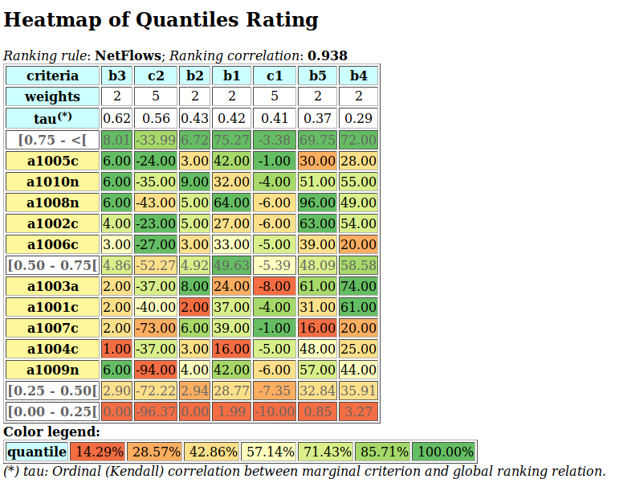
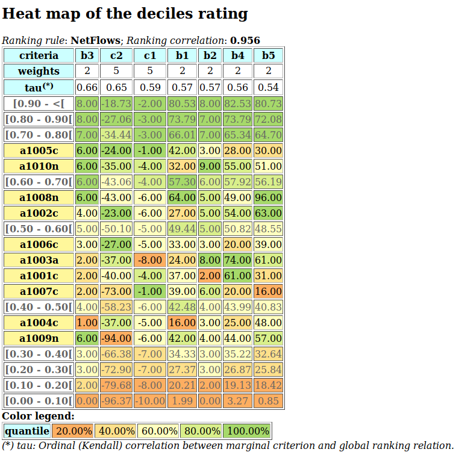

Tutorials of the Digraph3 resources¶
| Author: | Raymond Bisdorff, Emeritus Professor, University of Luxembourg FSTC/CSC |
|---|---|
| Version: | Revision: Python 3.6 |
| Copyright: | R. Bisdorff 2013-2018 |
List of Digraph3 tutorials
- Working with the Digraph3 software resources
- Manipulating
Digraphobjects - Computing the winner of an election
- Working with the
outrankingDigraphsmodule - Generating random performance tableaux
- Computing a best choice recommendation
- Ranking with multiple incommensurable criteria
- Rating with learned quantile norms
- Working with the
graphsmodule - Computing the non isomorphic MISs of the n-cycle graph
- On computing digraph kernels
- Links and appendices
Working with the Digraph3 software resources¶
Purpose¶
The basic idea of the Digraph3 Python resources is to make easy python interactive sessions or write short Python3 scripts for computing all kind of results from a bipolar valued digraph or graph. These include such features as maximal independent or irredundant choices, maximal dominant or absorbent choices, rankings, outrankings, linear ordering, etc. Most of the available computing resources are meant to illustrate the Algorithmic Decision Theory course given at the University of Luxembourg in the context of its Master in Information and Computer Science (MICS).
The Python development of these computing resources offers the advantage of an easy to write and maintain OOP source code as expected from a performing scripting language without loosing on efficiency in execution times compared to compiled languages such as C++ or Java.
Downloading of the Digraph3 resources¶
Using the Digraph3 modules is easy. You only need to have installed on your system the Python programming language of version 3.+ (readily available under Linux and Mac OS). Notice that, from Version 3.3 on, the Python standard decimal module implements very efficiently its decimal.Decimal class in C. Now, Decimal objects are mainly used in the Digraph3 characteristic r-valuation functions, which makes the recent python-3.3+ versions much faster (more than twice as fast) when extensive digraph operations are performed.
Several download options (easiest under Linux or Mac OS-X) are given.
Either , by using a git client either, from github:
1
...$ git clone https://github.com/rbisdorff/Digraph3
Or, from sourceforge.net:
1
...$ git clone https://git.code.sf.net/p/digraph3/code Digraph3
or a subversion client:
1
...$ svn co https://leopold-loewenheim.uni.lu/svn/repos/Digraph3
Or, with a browser access, download and extract the latest distribution zip archive either, from the github link above or, from the sourceforge page .
Starting a python3 session¶
You may start an interactive Python3 session in the Digraph3 directory for exploring the classes and methods provided by the digraphs module. To do so, enter the python3 commands following the session prompts marked with >>>. The lines without the prompt are output from the Python interpreter:
1 2 3 4 5 6 7 8 9 10 11 12 13 14 15 16 17 18 19 20 21 | $HOME/.../Digraph3$ python3
Python 3.6.7 (default, Oct 22 2018, 11:32:17)
[GCC 8.2.0] on linux
Type "help", "copyright", "credits" or
"license" for more information.
>>> from randomDigraphs import RandomDigraph
>>> dg = RandomDigraph(order=5,arcProbability=0.5,
seed=101)
>>> dg
*------- Digraph instance description ------*
Instance class : RandomDigraph
Instance name : randomDigraph
Digraph Order : 5
Digraph Size : 12
Valuation domain : [-1.00 - 1.00]
Determinateness : 100.000
Attributes : ['actions', 'valuationdomain', 'relation',
'order', 'name', 'gamma', 'notGamma']
>>> dg.save('tutorialDigraph')
*--- Saving digraph in file: <tutorialDigraph.py> ---*
>>> ...
|
Digraph object structure¶
All digraphs.Digraph objects (see Line 12 above) contain at least the following attributes:
- A name attribute, holding usually the actual name of the stored instance that was used to create the instance;
- A collection of digraph nodes called actions (decision actions): an ordered dictionary of nodes with at least a ‘name’ attribute;
- An order attribute containig the number of graph nodes (length of the actions dictionary) automatically added by the object constructor;
- A logical characteristic valuationdomain, a dictionary with three decimal entries: the minimum (-1.0, means certainly false), the median (0.0, means missing information) and the maximum characteristic value (+1.0, means certainly true);
- The digraph relation : a double dictionary indexed by an oriented pair of actions (nodes) and carrying a decimal characteristic value in the range of the previous valuation domain;
- Its associated gamma function : a dictionary containing the direct successors, respectively predecessors of each action, automatically added by the object constructor;
- Its associated notGamma function : a dictionary containing the actions that are not direct successors respectively predecessors of each action, automatically added by the object constructor.
See the reference manual of the digraphs module.
Permanent storage¶
The dg.save('tutorialDigraph') command (see Line 19 above) stores the digraph dg in a file named tutorialDigraph.py with the following content:
1 2 3 4 5 6 7 8 9 10 11 12 13 14 15 16 17 | # Saved digraph instance
actions = {
'a1': {'shortName': 'a1', 'name': 'random decision action'},
'a2': {'shortName': 'a2', 'name': 'random decision action'},
'a3': {'shortName': 'a3', 'name': 'random decision action'},
'a4': {'shortName': 'a4', 'name': 'random decision action'},
'a5': {'shortName': 'a5', 'name': 'random decision action'},
}
valuationdomain = {'hasIntegerValuation': True,
'min': -1.0,'med': 0.0,'max': 1.0}
relation = {
'a1': {'a1':-1.0, 'a2':-1.0, 'a3':1.0, 'a4':-1.0, 'a5':-1.0,},
'a2': {'a1':1.0, 'a2':-1.0, 'a3':-1.0, 'a4':1.0, 'a5':1.0,},
'a3': {'a1':1.0, 'a2':-1.0, 'a3':-1.0, 'a4':1.0, 'a5':-1.0,},
'a4': {'a1':1.0, 'a2':1.0, 'a3':1.0, 'a4':-1.0, 'a5':-1.0,},
'a5': {'a1':1.0, 'a2':1.0, 'a3':1.0, 'a4':-1.0, 'a5':-1.0,},
}
|
Inspecting a Digraph object¶
We may reload a previously saved Digraph instance from the file named tutorialDigraph.py with the Digraph class constructor and the digraphs.Digraph.showAll() method output reveals us that dg is a connected irreflexive digraph of order five evaluated in a valuation domain from -1 to 1.
1 2 3 4 5 6 7 8 9 10 11 12 13 14 15 16 17 18 19 20 21 22 23 24 25 26 27 28 29 30 31 32 33 | >>> dg = Digraph('tutorialDigraph')
>>> dg.showAll()
*----- show detail -------------*
Digraph : tutorialDigraph
*---- Actions ----*
['a1', 'a2', 'a3', 'a4', 'a5']
*---- Characteristic valuation domain ----*
{'hasIntegerValuation': True, 'min': Decimal('-1.0'), 'med': Decimal('0.0'), 'max': Decimal('1.0')}
* ---- Relation Table -----
S | 'a1' 'a2' 'a3' 'a4' 'a5'
------|-------------------------------
'a1' | -1 -1 1 -1 -1
'a2' | 1 -1 -1 1 1
'a3' | 1 -1 -1 1 -1
'a4' | 1 1 1 -1 -1
'a5' | 1 1 1 -1 -1
Valuation domain: [-1;+1]
*--- Connected Components ---*
1: ['a1', 'a2', 'a3', 'a4', 'a5']
Neighborhoods:
Gamma :
'a1': in => {'a2', 'a4', 'a3', 'a5'}, out => {'a3'}
'a2': in => {'a5', 'a4'}, out => {'a1', 'a4', 'a5'}
'a3': in => {'a1', 'a4', 'a5'}, out => {'a1', 'a4'}
'a4': in => {'a2', 'a3'}, out => {'a1', 'a3', 'a2'}
'a5': in => {'a2'}, out => {'a1', 'a3', 'a2'}
Not Gamma :
'a1': in => set(), out => {'a2', 'a4', 'a5'}
'a2': in => {'a1', 'a3'}, out => {'a3'}
'a3': in => {'a2'}, out => {'a2', 'a5'}
'a4': in => {'a1', 'a5'}, out => {'a5'}
'a5': in => {'a1', 'a4', 'a3'}, out => {'a4'}
>>>
|
The digraphs.Digraph.exportGraphViz() method generates in the current working directory a tutorial.dot file and a tutorialdigraph.png picture of the tutorial digraph g, if the graphviz tools are installed on your system [1].
1 2 3 4 | >>> dg.exportGraphViz('tutorialDigraph')
*---- exporting a dot file do GraphViz tools ---------*
Exporting to tutorialDigraph.dot
dot -Grankdir=BT -Tpng tutorialDigraph.dot -o tutorialDigraph.png
|

Some simple methods are easily applicable to this instantiated Digraph object dg , like the following digraphs.Digraph.showStatistics() method.
1 2 3 4 5 6 7 8 9 10 11 12 13 14 15 16 17 18 19 20 21 22 23 24 25 26 27 28 29 30 31 32 33 34 35 36 37 38 39 | >>> dg.showStatistics()
*----- general statistics -------------*
for digraph : <tutorialDigraph.py>
order : 5 nodes
size : 12 arcs
# undetermined : 0 arcs
determinateness : 1.00
arc density : 0.60
double arc density : 0.40
single arc density : 0.40
absence density : 0.20
strict single arc density: 0.40
strict absence density : 0.20
# components : 1
# strong components : 1
transitivity degree : 0.48
: [0, 1, 2, 3, 4, 5]
outdegrees distribution : [0, 1, 1, 3, 0, 0]
indegrees distribution : [0, 1, 2, 1, 1, 0]
mean outdegree : 2.40
mean indegree : 2.40
: [0, 1, 2, 3, 4, 5, 6, 7, 8, 9, 10]
symmetric degrees dist. : [0, 0, 0, 0, 1, 4, 0, 0, 0, 0, 0]
mean symmetric degree : 4.80
outdegrees concentration index : 0.1667
indegrees concentration index : 0.2333
symdegrees concentration index : 0.0333
: [0, 1, 2, 3, 4, 'inf']
neighbourhood depths distribution: [0, 1, 4, 0, 0, 0]
mean neighbourhood depth : 1.80
digraph diameter : 2
agglomeration distribution :
a1 : 58.33
a2 : 33.33
a3 : 33.33
a4 : 50.00
a5 : 50.00
agglomeration coefficient : 45.00
>>> ...
|
Special classes¶
Some special classes of digraphs, like the digraphs.CompleteDigraph, the digraphs.EmptyDigraph or the oriented digraphs.GridDigraph class for instance, are readily available.
1 2 3 4 5 6 | >>> from digraphs import GridDigraph
>>> grid = GridDigraph(n=5,m=5,hasMedianSplitOrientation=True)
>>> grid.exportGraphViz('tutorialGrid')
*---- exporting a dot file for GraphViz tools ---------*
Exporting to tutorialGrid.dot
dot -Grankdir=BT -Tpng TutorialGrid.dot -o tutorialGrid.png
|

For more information about its resources, see the technical documentation of the digraphs module.
Manipulating Digraph objects¶
Random digraph¶
We are starting this tutorial with generating a randomly [-1;1]-valued (Normalized=True) digraph of order 7, denoted dg and modelling a binary relation (x S y) defined on the set of nodes of dg. For this purpose, the Digraph3 collection contains a randomDigraphs module providing a specific digraphs.RandomValuationDigraph constructor.
1 2 3 | >>> from randomDigraphs import RandomValuationDigraph
>>> dg = RandomValuationDigraph(order=7,Normalized=True)
>>> dg.save('tutRandValDigraph')
|
With the save() method (see Line 3) we may keep a backup version for future use of dg which will be stored in a file called tutRandValDigraph.py in the current working directory. The Digraph class now provides some generic methods for exploring a given Digraph object, like the showShort(), showAll(), showRelationTable() and the showNeighborhoods() methods.
1 2 3 4 5 6 7 8 9 10 11 12 13 14 15 16 17 18 19 20 21 22 23 24 25 26 27 28 29 30 31 32 33 34 35 36 37 38 39 | >>> dg.showShort()
*----- show summary -------------*
Digraph : randomValuationDigraph
*---- Actions ----*
['1', '2', '3', '4', '5', '6', '7']
*---- Characteristic valuation domain ----*
{'med': Decimal('0.0'), 'hasIntegerValuation': False,
'min': Decimal('-1.0'), 'max': Decimal('1.0')}
*--- Connected Components ---*
1: ['1', '2', '3', '4', '5', '6', '7']
>>> dg.showRelationTable(ReflexiveTerms=False)
* ---- Relation Table -----
r(xSy) | '1' '2' '3' '4' '5' '6' '7'
-------|------------------------------------------------------------
'1' | - -0.48 0.70 0.86 0.30 0.38 0.44
'2' | -0.22 - -0.38 0.50 0.80 -0.54 0.02
'3' | -0.42 0.08 - 0.70 -0.56 0.84 -1.00
'4' | 0.44 -0.40 -0.62 - 0.04 0.66 0.76
'5' | 0.32 -0.48 -0.46 0.64 - -0.22 -0.52
'6' | -0.84 0.00 -0.40 -0.96 -0.18 - -0.22
'7' | 0.88 0.72 0.82 0.52 -0.84 0.04 -
>>> dg.showNeighborhoods()
Neighborhoods observed in digraph 'randomdomValuation'
Gamma :
'1': in => {'5', '7', '4'}, out => {'5', '7', '6', '3', '4'}
'2': in => {'7', '3'}, out => {'5', '7', '4'}
'3': in => {'7', '1'}, out => {'6', '2', '4'}
'4': in => {'5', '7', '1', '2', '3'}, out => {'5', '7', '1', '6'}
'5': in => {'1', '2', '4'}, out => {'1', '4'}
'6': in => {'7', '1', '3', '4'}, out => set()
'7': in => {'1', '2', '4'}, out => {'1', '2', '3', '4', '6'}
Not Gamma :
'1': in => {'6', '2', '3'}, out => {'2'}
'2': in => {'5', '1', '4'}, out => {'1', '6', '3'}
'3': in => {'5', '6', '2', '4'}, out => {'5', '7', '1'}
'4': in => {'6'}, out => {'2', '3'}
'5': in => {'7', '6', '3'}, out => {'7', '6', '2', '3'}
'6': in => {'5', '2'}, out => {'5', '7', '1', '3', '4'}
'7': in => {'5', '6', '3'}, out => {'5'}
|
Warning
Notice that most Digraph class methods will ignore the reflexive couples by considering that the relation is indeterminate (the characteristic value  for all action x is put to the median, i.e. indeterminate, value) in this case.
for all action x is put to the median, i.e. indeterminate, value) in this case.
Graphviz drawings¶
We may have an even better insight into the Digraph object dg by looking at a graphviz drawing [1].
1 2 3 4 | >>> dg.exportGraphViz('tutRandValDigraph')
*---- exporting a dot file for GraphViz tools ---------*
Exporting to tutRandValDigraph.dot
dot -Grankdir=BT -Tpng tutRandValDigraph.dot -o tutRandValDigraph.png
|

Double links are drawn in bold black with an arrowhead at each end, whereas single asymmetric links are drawn in black with an arrowhead showing the direction of the link. Notice the undetermined relational situation ( ) observed between nodes ‘6’ and ‘2’. The corresponding link is marked in gray with an open arrowhead in the drawing.
) observed between nodes ‘6’ and ‘2’. The corresponding link is marked in gray with an open arrowhead in the drawing.
Asymmetric and symmetric parts¶
We may now extract both this symmetric as well as this asymmetric part of digraph dg with the help of two corresponding constructors.
1 2 3 4 5 | >>> from digraphs import AsymmetricPartialDigraph, SymmetricPartialDigraph
>>> asymDg = AsymmetricPartialDigraph(dg)
>>> asymDg.exportGraphViz()
>>> symDG = SymmetricPartialDigraph(dg)
>>> symDg.exportGraphViz()
|

Note
Notice that the partial objects asymDg and symDg put to the indeterminate characteristic value all not-asymmetric, respectively not-symmetric links between nodes.
Here below, for illustration the source code of relation constructor of the digraphs.AsymmetricPartialDigraph class:
1 2 3 4 5 6 7 8 9 10 11 12 13 14 15 16 17 18 19 20 | def _constructRelation(self):
actions = self.actions
Min = self.valuationdomain['min']
Max = self.valuationdomain['max']
Med = self.valuationdomain['med']
relationIn = self.relation
relationOut = {}
for a in actions:
relationOut[a] = {}
for b in actions:
if a != b:
if relationIn[a][b] >= Med and relationIn[b][a] <= Med:
relationOut[a][b] = relationIn[a][b]
elif relationIn[a][b] <= Med and relationIn[b][a] >= Med:
relationOut[a][b] = relationIn[a][b]
else:
relationOut[a][b] = Med
else:
relationOut[a][b] = Med
return relationOut
|
Fusion by epistemic disjunction¶
We may recover object dg from both partial objects asymDg and symDg with a bipolar fusion constructor, also called epistemic disjunction, available via the digraphs.FusionDigraph class.
1 2 3 4 5 6 7 8 9 10 11 12 13 | >>> from digraphs import FusionDigraph
>>> fusDg = FusionDigraph(asymDg,symDg)
>>> fusDg.showRelationTable()
* ---- Relation Table -----
r(xSy) | '1' '2' '3' '4' '5' '6' '7'
-------|------------------------------------------------------------
'1' | 0.00 -0.48 0.70 0.86 0.30 0.38 0.44
'2' | -0.22 0.00 -0.38 0.50 0.80 -0.54 0.02
'3' | -0.42 0.08 0.00 0.70 -0.56 0.84 -1.00
'4' | 0.44 -0.40 -0.62 0.00 0.04 0.66 0.76
'5' | 0.32 -0.48 -0.46 0.64 0.00 -0.22 -0.52
'6' | -0.84 0.00 -0.40 -0.96 -0.18 0.00 -0.22
'7' | 0.88 0.72 0.82 0.52 -0.84 0.04 0.00
|
Dual, converse and codual digraphs¶
We may as readily compute the dual, the converse and the codual (dual and converse) of dg.
1 2 3 4 5 6 7 8 9 10 11 12 13 14 15 16 17 18 19 20 21 22 23 24 25 26 27 28 29 30 31 32 33 34 35 36 | >>> from digraphs import DualDigraph, ConverseDigraph, CoDualDigraph
>>> ddg = DualDigraph(dg)
>>> ddg.showRelationTable()
-r(xSy) | '1' '2' '3' '4' '5' '6' '7'
--------|------------------------------------------
'1 ' | 0.00 0.48 -0.70 -0.86 -0.30 -0.38 -0.44
'2' | 0.22 0.00 0.38 -0.50 0.80 0.54 -0.02
'3' | 0.42 0.08 0.00 -0.70 0.56 -0.84 1.00
'4' | -0.44 0.40 0.62 0.00 -0.04 -0.66 -0.76
'5' | -0.32 0.48 0.46 -0.64 0.00 0.22 0.52
'6' | 0.84 0.00 0.40 0.96 0.18 0.00 0.22
'7' | 0.88 -0.72 -0.82 -0.52 0.84 -0.04 0.00
>>> cdg = ConverseDigraph(dg)
>>> cdg.showRelationTable()
* ---- Relation Table -----
r(ySx) | '1' '2' '3' '4' '5' '6' '7'
--------|------------------------------------------
'1' | 0.00 -0.22 -0.42 0.44 0.32 -0.84 0.88
'2' | -0.48 0.00 0.08 -0.40 -0.48 0.00 0.72
'3' | 0.70 -0.38 0.00 -0.62 -0.46 -0.40 0.82
'4' | 0.86 0.50 0.70 0.00 0.64 -0.96 0.52
'5' | 0.30 0.80 -0.56 0.04 0.00 -0.18 -0.84
'6' | 0.38 -0.54 0.84 0.66 -0.22 0.00 0.04
'7' | 0.44 0.02 -1.00 0.76 -0.52 -0.22 0.00
>>> cddg = CoDualDigraph(dg)
>>> cddg.showRelationTable()
* ---- Relation Table -----
-r(ySx) | '1' '2' '3' '4' '5' '6' '7'
--------|------------------------------------------------------------
'1' | 0.00 0.22 0.42 -0.44 -0.32 0.84 -0.88
'2' | 0.48 0.00 -0.08 0.40 0.48 0.00 -0.72
'3' | -0.70 0.38 0.00 0.62 0.46 0.40 -0.82
'4' | -0.86 -0.50 -0.70 0.00 -0.64 0.96 -0.52
'5' | -0.30 -0.80 0.56 -0.04 0.00 0.18 0.84
'6' | -0.38 0.54 -0.84 -0.66 0.22 0.00 -0.04
'7' | -0.44 -0.02 1.00 -0.76 0.52 0.22 0.00
|
Computing the dual, respectively the converse, may also be done with prefixing the __neg__ (-) or the __invert__ (~) operator. The codual of a Digraph object may, hence, as well be computed with a composition (in either order) of both operations.
1 2 3 4 5 6 7 8 9 10 11 12 13 14 | >>> ddg = -dg # dual of dg
>>> cdg = ~dg # converse of dg
>>> cddg = -(~dg) = ~(-dg) # codual of dg
>>> cddg.showRelationTable()
* ---- Relation Table -----
-r(ySx) | '1' '2' '3' '4' '5' '6' '7'
--------|------------------------------------------------------------
'1' | 0.00 0.22 0.42 -0.44 -0.32 0.84 -0.88
'2' | 0.48 0.00 -0.08 0.40 0.48 0.00 -0.72
'3' | -0.70 0.38 0.00 0.62 0.46 0.40 -0.82
'4' | -0.86 -0.50 -0.70 0.00 -0.64 0.96 -0.52
'5' | -0.30 -0.80 0.56 -0.04 0.00 0.18 0.84
'6' | -0.38 0.54 -0.84 -0.66 0.22 0.00 -0.04
'7' | -0.44 -0.02 1.00 -0.76 0.52 0.22 0.00
|
Symmetric and transitive closures¶
Symmetric and transitive closure in-site constructors are also available. Note that it is a good idea, before going ahead with these in-site operations who irreversibly modify the original dg object, to previously make a backup version of dg. The simplest storage method, always provided by the generic diggraphs.Digraph.save(), writes out in a named file the python content of the Digraph object in string representation.
1 2 3 4 | >>> dg.save('tutRandValDigraph')
>>> dg.closeSymmetric()
>>> dg.closeTransitive()
>>> dg.exportGraphViz('strongComponents')
|

Strong components¶
As the original digraph dg was connected (see above the result of the dg.showShort() command), both the symmetric and transitive closures operated together, will necessarily produce a single strong component, i.e. a complete digraph. We may sometimes wish to collapse all strong components in a given digraph and construct the so reduced digraph. Using the digraphs.StrongComponentsCollapsedDigraph constructor here will render a single hyper-node gathering all the original nodes.
1 2 3 4 5 6 7 8 9 10 11 12 13 14 15 16 17 18 19 | >>> from digraphs import StrongComponentsCollapsedDigraph
>>> sc = StrongComponentsCollapsedDigraph(dg)
>>> sc.showAll()
*----- show detail -----*
Digraph : tutRandValDigraph_Scc
*---- Actions ----*
['_7_1_2_6_5_3_4_']
* ---- Relation Table -----
S | 'Scc_1'
-------|---------
'Scc_1' | 0.00
short content
Scc_1 _7_1_2_6_5_3_4_
Neighborhoods:
Gamma :
'frozenset({'7', '1', '2', '6', '5', '3', '4'})': in => set(), out => set()
Not Gamma :
'frozenset({'7', '1', '2', '6', '5', '3', '4'})': in => set(), out => set()
>>> ...
|
CSV storage¶
Sometimes it is required to exchange the graph valuation data in CSV format with a statistical package like R. For this purpose it is possible to export the digraph data into a CSV file. The valuation domain is hereby normalized by default to the range [-1,1] and the diagonal put by default to the minimal value -1.
1 2 3 4 5 6 7 8 9 10 11 | >>> dg = Digraph('tutRandValDigraph')
>>> dg.saveCSV('tutRandValDigraph')
# content of file tutRandValDigraph.csv
"d","1","2","3","4","5","6","7"
"1",-1.0,0.48,-0.7,-0.86,-0.3,-0.38,-0.44
"2",0.22,-1.0,0.38,-0.5,-0.8,0.54,-0.02
"3",0.42,-0.08,-1.0,-0.7,0.56,-0.84,1.0
"4",-0.44,0.4,0.62,-1.0,-0.04,-0.66,-0.76
"5",-0.32,0.48,0.46,-0.64,-1.0,0.22,0.52
"6",0.84,0.0,0.4,0.96,0.18,-1.0,0.22
"7",-0.88,-0.72,-0.82,-0.52,0.84,-0.04,-1.0
|
It is possible to reload a Digraph instance from its previously saved CSV file content.
1 2 3 4 5 6 7 8 9 10 11 12 | >>> dgcsv = CSVDigraph('tutRandValDigraph')
>>> dgcsv.showRelationTable(ReflexiveTerms=False)
* ---- Relation Table -----
r(xSy) | '1' '2' '3' '4' '5' '6' '7'
-------|------------------------------------------------------------
'1' | - -0.48 0.70 0.86 0.30 0.38 0.44
'2' | -0.22 - -0.38 0.50 0.80 -0.54 0.02
'3' | -0.42 0.08 - 0.70 -0.56 0.84 -1.00
'4' | 0.44 -0.40 -0.62 - 0.04 0.66 0.76
'5' | 0.32 -0.48 -0.46 0.64 - -0.22 -0.52
'6' | -0.84 0.00 -0.40 -0.96 -0.18 - -0.22
'7' | 0.88 0.72 0.82 0.52 -0.84 0.04 -
|
It is as well possible to show a colored version of the valued relation table in a system browser window tab.
1 2 | >>> dgcsv.showHTMLRelationTable(tableTitle="Tutorial random digraph")
>>> ...
|

Positive arcs are shown in green and negative in red. Indeterminate -zero-valued- links, like the reflexive diagonal ones or the link between node 6 and node 2, are shown in gray.
Complete, empty and indeterminate digraphs¶
Let us finally mention some special universal classes of digraphs that are readily available in the digraphs module, like the digraphs.CompleteDigraph, the digraphs.EmptyDigraph and the digraphs.IndeterminateDigraph classes, which put all characteristic values respectively to the maximum, the minimum or the median indeterminate characteristic value.
1 2 3 4 5 6 7 8 9 10 11 12 13 14 15 16 17 18 19 20 21 22 23 24 25 26 27 28 29 30 31 32 33 34 35 36 37 38 39 40 41 42 43 44 45 46 47 48 49 50 51 52 53 54 55 56 57 58 59 60 61 | >>> from digraphs import CompleteDigraph,EmptyDigraph,
... IndeterminateDigraph
>>> help(CompleteDigraph)
Help on class CompleteDigraph in module digraphs:
class CompleteDigraph(Digraph)
| Parameters:
| order > 0; valuationdomain=(Min,Max).
| Specialization of the general Digraph class for generating
| temporary complete graphs of order 5 in {-1,0,1} by default.
| Method resolution order:
| CompleteDigraph
| Digraph
| builtins.object
...
>>> e = EmptyDigraph(order=5)
>>> e.showRelationTable()
* ---- Relation Table -----
S | '1' '2' '3' '4' '5'
---- -|---------------------------------------
'1' | -1.00 -1.00 -1.00 -1.00 -1.00
'2' | -1.00 -1.00 -1.00 -1.00 -1.00
'3' | -1.00 -1.00 -1.00 -1.00 -1.00
'4' | -1.00 -1.00 -1.00 -1.00 -1.00
'5' | -1.00 -1.00 -1.00 -1.00 -1.00
>>> e.showNeighborhoods()
Neighborhoods:
Gamma :
'1': in => set(), out => set()
'2': in => set(), out => set()
'5': in => set(), out => set()
'3': in => set(), out => set()
'4': in => set(), out => set()
Not Gamma :
'1': in => {'2', '4', '5', '3'}, out => {'2', '4', '5', '3'}
'2': in => {'1', '4', '5', '3'}, out => {'1', '4', '5', '3'}
'5': in => {'1', '2', '4', '3'}, out => {'1', '2', '4', '3'}
'3': in => {'1', '2', '4', '5'}, out => {'1', '2', '4', '5'}
'4': in => {'1', '2', '5', '3'}, out => {'1', '2', '5', '3'}
>>> i = IndeterminateDigraph()
* ---- Relation Table -----
S | '1' '2' '3' '4' '5'
------|--------------------------------------
'1' | 0.00 0.00 0.00 0.00 0.00
'2' | 0.00 0.00 0.00 0.00 0.00
'3' | 0.00 0.00 0.00 0.00 0.00
'4' | 0.00 0.00 0.00 0.00 0.00
'5' | 0.00 0.00 0.00 0.00 0.00
>>> i.showNeighborhoods()
Neighborhoods:
Gamma :
'1': in => set(), out => set()
'2': in => set(), out => set()
'5': in => set(), out => set()
'3': in => set(), out => set()
'4': in => set(), out => set()
Not Gamma :
'1': in => set(), out => set()
'2': in => set(), out => set()
'5': in => set(), out => set()
'3': in => set(), out => set()
'4': in => set(), out => set()
|
Note
Notice the subtle difference between the neighborhoods of an empty and the neighborhoods of an indeterminate digraph instance. In the first kind, the neighborhoods are known to be completely empty whereas, in the latter, nothing is known about the actual neighborhoods of the nodes. These two cases illustrate why in the case of a bipolar valuation domain, we need both a gamma and a notGamma function.
Computing the winner of an election¶
Linear voting profiles¶
The votingProfiles module provides resources for handling election results [ADT-L2], like the votingProfiles.LinearVotingProfile class. We consider an election involving a finite set of candidates and finite set of weighted voters, who express their voting preferences in a complete linear ranking (without ties) of the candidates. The data is internally stored in two ordered dictionaries, one for the voters and another one for the candidates. The linear ballots are stored in a standard dictionary:
1 2 3 4 5 6 7 8 9 | candidates = OrderedDict([('a1',...), ('a2',...), ('a3', ...), ...}
voters = OrderedDict([('v1',{'weight':10}), ('v2',{'weight':3}), ...}
## each voter specifies a linearly ranked list of candidates
## from the best to the worst (without ties
linearBallot = {
'v1' : ['a2','a3','a1', ...],
'v2' : ['a1','a2','a3', ...],
...
}
|
The module provides a votingProfiles.RandomLinearVotingProfile class for generating random instances of the votingProfiles.LinearVotingProfile class. In an interactive Python session we may obtain for the election of 3 candidates by 5 voters the following result.
1 2 3 4 5 6 7 8 9 10 11 12 13 14 | >>> from votingProfiles import RandomLinearVotingProfile
>>> v = RandomLinearVotingProfile(numberOfVoters=5,
... numberOfCandidates=3
... votersWeights=[2,3,1,5,4])
>>> v.candidates
OrderedDict(['a1',{'name':'a1}), ('a2',{'name':'a2'}), ('a3':{'name':'a3'})])
>>> v.voters
OrderedDict([('v1',{'weight': 2}), ('v2':{'weight': 3}),
('v3',{'weight': 1}), ('v4':{'weight': 5}),
('v5',{'weight': 4})])
>>> v.linearBallot
{'v4': ['a1', 'a3', 'a2'], 'v3': ['a1', 'a3', 'a2'], 'v1': ['a1', 'a2', 'a3'],
'v5': ['a2', 'a3', 'a1'], 'v2': ['a3', 'a2', 'a1']}
>>> ...
|
Notice that in this random example, the five voters are weighted (see Line 4). Their linear ballots can be viewed with the showLinearBallots method.
1 2 3 4 5 6 7 8 9 | >>> v.showLinearBallots()
voters(weight) candidates rankings
v1(2): ['a2', 'a1', 'a3']
v2(3): ['a3', 'a1', 'a2']
v3(1): ['a1', 'a3', 'a2']
v4(5): ['a1', 'a2', 'a3']
v5(4): ['a3', 'a1', 'a2']
# voters: 15
>>> ...
|
Editing of the linear voting profile may be achieved by storing the data in a file, edit it, and reload it again.
1 2 3 | >>> v.save('tutorialLinearVotingProfile')
*--- Saving linear profile in file: <tutorialLinearVotingProfile.py> ---*
>>> v = LinearVotingProfile('tutorialLinearVotingProfile')
|
Computing the winner¶
We may easily compute uni-nominal votes, i.e. how many times a candidate was ranked first, and see who is consequently the simple majority winner(s) in this election.
1 2 3 4 5 | >>> v.computeUninominalVotes()
{'a2': 2, 'a1': 6, 'a3': 7}
>>> v.computeSimpleMajorityWinner()
['a3']
>>> ...
|
As we observe no absolute majority (8/15) of votes for any of the three candidate, we may look for the instant runoff winner instead (see [ADT-L2]).
1 2 3 | >>> v.computeInstantRunoffWinner()
['a1']
>>> ...
|
We may also follow the Chevalier de Borda’s advice and, after a rank analysis of the linear ballots, compute the Borda score of each candidate and hence determine the Borda winner(s).
1 2 3 4 5 6 | >>> v.computeRankAnalysis()
{'a2': [2, 5, 8], 'a1': [6, 9, 0], 'a3': [7, 1, 7]}
>>> v.computeBordaScores()
{'a2': 36, 'a1': 24, 'a3': 30}
>>> v.computeBordaWinners()
['a1']
|
The Borda rank analysis table my be printed out with a corresponding show command.
1 2 3 4 5 6 7 8 9 | >>> v.showRankAnalysisTable()
*---- Borda rank analysis tableau -----*
candi- | alternative-to-rank | Borda
dates | 1 2 3 | score average
-------|-------------------------------------
'a1' | 6 9 0 | 24 1.60
'a3' | 7 1 7 | 30 2.00
'a2' | 2 5 8 | 36 2.40
>>> ...
|
The Condorcet winner¶
In our randomly generated election results, we are lucky: The instant runoff winner and the Borda winner both are candidate a1. However, we could also follow the Marquis de Condorcet’s advice, and compute the majority margins obtained by voting for each individual pair of candidates. For instance, candidate a1 is ranked four times before and once behind candidate a2. Hence the majority margin M(a1,a2) is 4 - 1 = +3. These majority margins define on the set of candidates what we call the Condorcet digraph. The votingProfiles.CondorcetDigraph class (a specialization of the digraphs.Digraph class) is available for handling such pairwise majority margins.
1 2 3 4 5 6 7 8 9 10 11 12 13 14 15 16 17 | >>> from votingProfiles import CondorcetDigraph
>>> cdg = CondorcetDigraph(v,hasIntegerValuation=True)
>>> cdg.showAll()
*----- show detail -------------*
Digraph : rel_randLinearProfile
*---- Actions ----*
['a1', 'a2', 'a3']
*---- Characteristic valuation domain ----*
{'max': Decimal('15.0'), 'med': Decimal('0'),
'min': Decimal('-15.0'), 'hasIntegerValuation': True}
* ---- majority margins -----
M(x,y) | 'a1' 'a2' 'a3'
----------|-------------------------------------------
'a1' | 0 11 1
'a2' | -11 0 -1
'a3' | -1 1 0
Valuation domain: [-15;+15]
|
A candidate x, showing a positive majority margin M(x,y), is beating candidate y with an absolute majority in a pairwise voting. Hence, a candidate showing only positive terms in her row in the Condorcet digraph relation table, beats all other candidates with absolute majority of votes. Condorcet recommends to declare this candidate (is always unique, why?) the winner of the election. Here we are lucky, it is again candidate a1 who is hence the Condorcet winner-
1 2 | >>> cdg.computeCondorcetWinner()
['a1']
|
By seeing the majority margins like a bipolarly-valued characteristic function for a global preference relation defined on the set of canditates, we may use all operational resources of the generic Digraph class (see Working with the Digraph3 software resources), and especially its exportGraphViz method [1], for visualizing an election result.
1 2 3 4 | >>> cdg.exportGraphViz('tutorialLinearBallots')
*---- exporting a dot file for GraphViz tools ---------*
Exporting to tutorialLinearBallots.dot
dot -Grankdir=BT -Tpng tutorialLinearBallots.dot -o tutorialLinearBallots.png
|

Cyclic social preferences¶
Usually, when aggregating linear ballots, there appear cyclic social preferences. Let us consider for instance the following linear voting profile and construct the corresponding Condorcet digraph.
1 2 3 4 5 6 7 8 9 10 11 12 13 14 15 16 17 18 19 20 21 | >>> v.showLinearBallots()
voters(weight) candidates rankings
v1(1): ['a1', 'a3', 'a5', 'a2', 'a4']
v2(1): ['a1', 'a2', 'a4', 'a3', 'a5']
v3(1): ['a5', 'a2', 'a4', 'a3', 'a1']
v4(1): ['a3', 'a4', 'a1', 'a5', 'a2']
v5(1): ['a4', 'a2', 'a3', 'a5', 'a1']
v6(1): ['a2', 'a4', 'a5', 'a1', 'a3']
v7(1): ['a5', 'a4', 'a3', 'a1', 'a2']
v8(1): ['a2', 'a4', 'a5', 'a1', 'a3']
v9(1): ['a5', 'a3', 'a4', 'a1', 'a2']
>>> cdg = CondorcetDigraph(v)
>>> cdg.showRelationTable()
* ---- Relation Table -----
S | 'a1' 'a2' 'a3' 'a4' 'a5'
------|----------------------------------------
'a1' | - 0.11 -0.11 -0.56 -0.33
'a2' | -0.11 - 0.11 0.11 -0.11
'a3' | 0.11 -0.11 - -0.33 -0.11
'a4' | 0.56 -0.11 0.33 - 0.11
'a5' | 0.33 0.11 0.11 -0.11 -
|
Now, we cannot find any completely positive row in the relation table. No one of the five candidates is beating all the others with an absolute majority of votes. There is no Condorcet winner anymore. In fact, when looking at a graphviz drawing of this Condorcet digraph, we may observe cyclic preferences, like (a1 > a2 > a3 > a1) for instance.
1 2 3 4 | >>> cdg.exportGraphViz('cycles')
*---- exporting a dot file for GraphViz tools ---------*
Exporting to cycles.dot
dot -Grankdir=BT -Tpng cycles.dot -o cycles.png
|

But, there may be many cycles appearing in a digraph, and, we may detect and enumerate all minimal chordless circuits in a Digraph instance with the computeChordlessCircuits() method.
1 2 3 4 | >>> cdg.computeChordlessCircuits()
[(['a2', 'a3', 'a1'], frozenset({'a2', 'a3', 'a1'})),
(['a2', 'a4', 'a5'], frozenset({'a2', 'a5', 'a4'})),
(['a2', 'a4', 'a1'], frozenset({'a2', 'a1', 'a4'}))]
|
Condorcet’s approach for determining the winner of an election is hence not decisive in all circumstances and we need to exploit more sophisticated approaches for finding the winner of the election on the basis of the majority margins of the given linear ballots (see [BIS-2008]).
Many more tools for exploiting voting results are available, see the technical documentation of the votingProfiles module.
Working with the outrankingDigraphs module¶
See also the technical documentation of the outrankingDigraphs module.
Outranking digraph¶
In this Digraph3 module, the main outrankingDigraphs.BipolarOutrankingDigraph class provides a generic bipolar outranking digraph model. A given object of this class consists in
- a potential set of decision actions : a dictionary describing the potential decision actions or alternatives with ‘name’ and ‘comment’ attributes,
- a coherent family of criteria: a dictionary of criteria functions used for measuring the performance of each potential decision action with respect to the preference dimension captured by each criterion,
- the evaluations: a dictionary of performance evaluations for each decision action or alternative on each criterion function.
- the digraph valuationdomain, a dictionary with three entries: the minimum (-100, means certainly no link), the median (0, means missing information) and the maximum characteristic value (+100, means certainly a link),
- the outranking relation : a double dictionary defined on the Cartesian product of the set of decision alternatives capturing the credibility of the pairwise outranking situation computed on the basis of the performance differences observed between couples of decision alternatives on the given family if criteria functions.
With the help of the outrankingDigraphs.RandomBipolarOutrankingDigraph class (of type outrankingDigraphs.BipolarOutrankingDigraph) , let us generate for illustration a random bipolar outranking digraph consisting of 7 decision actions denoted a01, a02, …, a07.
1 2 3 4 5 6 7 8 9 10 11 12 13 14 15 16 | >>> from outrankingDigraphs import RandomBipolarOutrankingDigraph
>>> odg = RandomBipolarOutrankingDigraph()
>>> odg.showActions()
*----- show digraphs actions --------------*
key: a01
name: random decision action
comment: RandomPerformanceTableau() generated.
key: a02
name: random decision action
comment: RandomPerformanceTableau() generated.
...
...
key: a07
name: random decision action
comment: RandomPerformanceTableau() generated.
>>> ...
|
In this example we consider furthermore a family of seven equisignificant cardinal criteria functions g01, g02, …, g07, measuring the performance of each alternative on a rational scale from 0.0 to 100.00. In order to capture the evaluation’s uncertainty and imprecision, each criterion function g1 to g7 admits three performance discrimination thresholds of 10, 20 and 80 pts for warranting respectively any indifference, preference and veto situations.
1 2 3 4 5 6 7 8 9 10 11 12 13 14 15 16 17 18 19 20 21 22 | >>> odg.showCriteria()
*---- criteria -----*
g01 'digraphs.RandomPerformanceTableau() instance'
Scale = [0.0, 100.0]
Weight = 3.0
Threshold pref : 20.00 + 0.00x ; percentile: 0.28
Threshold ind : 10.00 + 0.00x ; percentile: 0.095
Threshold veto : 80.00 + 0.00x ; percentile: 1.0
g02 'digraphs.RandomPerformanceTableau() instance'
Scale = [0.0, 100.0]
Weight = 3.0
Threshold pref : 20.00 + 0.00x ; percentile: 0.33
Threshold ind : 10.00 + 0.00x ; percentile: 0.19
Threshold veto : 80.00 + 0.00x ; percentile: 0.95
...
...
g07 'digraphs.RandomPerformanceTableau() instance'
Scale = [0.0, 100.0]
Weight = 10.0
Threshold pref : 20.00 + 0.00x ; percentile: 0.476
Threshold ind : 10.00 + 0.00x ; percentile: 0.238
Threshold veto : 80.00 + 0.00x ; percentile: 1.0
|
The performance evaluations of each decision alternative on each criterion are gathered in a performance tableau.
1 2 3 4 5 6 7 8 9 10 11 12 | >>> odg.showPerformanceTableau()
*---- performance tableau -----*
criteria | 'a01' 'a02' 'a03' 'a04' 'a05' 'a06' 'a07'
---------|------------------------------------------------------
'g01' | 9.6 48.8 21.7 37.3 81.9 48.7 87.7
'g02' | 90.9 11.8 96.6 41.0 34.0 53.9 46.3
'g03' | 97.8 46.4 83.3 30.9 61.5 85.4 82.5
'g04' | 40.5 43.6 53.2 17.5 38.6 21.5 67.6
'g05' | 33.0 40.7 96.4 55.1 46.2 58.1 52.6
'g06' | 47.6 19.0 92.7 55.3 51.7 26.6 40.4
'g07' | 41.2 64.0 87.7 71.6 57.8 59.3 34.7
>>> ...
|
Browsing the performances¶
We may visualize the same performance tableau in a two-colors setting in the default system browser with the command.
1 2 | >>> odg.showHTMLPerformanceTableau()
>>> ...
|

It is worthwhile noticing that green and red marked evaluations indicate best, respectively worst, performances of an alternative on a criterion. In this example, we may hence notice that alternative a03 is in fact best performing on four out of seven criteria.
We may, furthermore, rank the alternatives on the basis of the weighted marginal quintiles and visualize the same performance tableau in an even more colorful and sorted setting.
1 2 | >>> odg.showHTMLPerformanceHeatmap(quantiles=5,colorLevels=5)
>>> ...
|

There is no doubt that action a03, with a performance in the highest quintile in five out of seven criteria, appears definitely to be best performing. Action a05 shows a more or less average performance on most criteria, whereas action a02 appears to be the weakest alternative.
Valuation semantics¶
- Considering the given performance tableau, the
outrankingDigraphs.BipolarOutrankingDigraphclass constructor computes the characteristic value of a pairwise outranking relation “
of a pairwise outranking relation “ ” (see [BIS-2013], [ADT-L7]) in a default valuation domain [-100.0,+100.0] with the median value 0.0 acting as indeterminate characteristic value. The semantics of r(x S y) are the following.
” (see [BIS-2013], [ADT-L7]) in a default valuation domain [-100.0,+100.0] with the median value 0.0 acting as indeterminate characteristic value. The semantics of r(x S y) are the following. - If
 it is more True than False that x outranks y, i.e. alternative x is at least as well performing than alternative y and there is no considerable negative performance difference observed in disfavour of x,
it is more True than False that x outranks y, i.e. alternative x is at least as well performing than alternative y and there is no considerable negative performance difference observed in disfavour of x, - If
 it is more False than True that x outranks y, i.e. alternative x is not at least as well performing than alternative y and there is no considerable positive performance difference observed in favour of x,
it is more False than True that x outranks y, i.e. alternative x is not at least as well performing than alternative y and there is no considerable positive performance difference observed in favour of x, - If
 it is indeterminate whether x outranks y or not.
it is indeterminate whether x outranks y or not.
- If
The resulting bipolarly valued outranking relation may be inspected with the following command.
1 2 3 4 5 6 7 8 9 10 11 12 13 | >>> odg.showRelationTable()
* ---- Relation Table -----
r(x S y)| 'a01' 'a02' 'a03' 'a04' 'a05' 'a06' 'a07'
--------|--------------------------------------------------------------
'a01' | +0.00 +29.73 -29.73 +13.51 +48.65 +40.54 +48.65
'a02' | +13.51 +0.00 -100.00 +37.84 +13.51 +43.24 -37.84
'a03' | +83.78 +100.00 +0.00 +91.89 +83.78 +83.78 +70.27
'a04' | +24.32 +48.65 -56.76 +0.00 +24.32 +51.35 +24.32
'a05' | +51.35 +100.00 -70.27 +72.97 +0.00 +51.35 +32.43
'a06' | +16.22 +72.97 -51.35 +35.14 +32.43 +0.00 +37.84
'a07' | +67.57 +45.95 -24.32 +27.03 +27.03 +45.95 +0.00
>>> odg.valuationdomain
{'min': Decimal('-100.0'), 'max': Decimal('100.0'), 'med': Decimal('0.0')}
|
Pairwise comparisons¶
From above given semantics, we may consider that a01 outranks a02 ( ), but not a03 (
), but not a03 ( ). In order to comprehend the characteristic values shown in the relation table above, we may furthermore have a look at the pairwise multiple criteria comparison between alternatives a01 and a02.
). In order to comprehend the characteristic values shown in the relation table above, we may furthermore have a look at the pairwise multiple criteria comparison between alternatives a01 and a02.
1 2 3 4 5 6 7 8 9 10 11 12 13 14 | >>> odg.showPairwiseComparison('a01','a02')
*------------ pairwise comparison ----*
Comparing actions : (a01, a02)
crit. wght. g(x) g(y) diff | ind p concord |
------------------------------- ---------------------------------
g01 3.00 9.56 48.84 -39.28 | 10.00 20.00 -3.00 |
g02 3.00 90.94 11.79 +79.15 | 10.00 20.00 +3.00 |
g03 6.00 97.79 46.36 +51.43 | 10.00 20.00 +6.00 |
g04 5.00 40.53 43.61 -3.08 | 10.00 20.00 +5.00 |
g05 3.00 33.04 40.67 -7.63 | 10.00 20.00 +3.00 |
g06 7.00 47.57 19.00 +28.57 | 10.00 20.00 +7.00 |
g07 10.00 41.21 63.95 -22.74 | 10.00 20.00 -10.00 |
-----------------------------------------------------------------
Valuation in range: -37.00 to +37.00; global concordance: +11.00
|
The outranking valuation characteristic appears as majority margin resulting from the difference of the weights of the criteria in favor of the statement that alternative a01 is at least well performing as alternative a02. No considerable performance difference being observed, no veto or counter-veto situation is triggered in this pairwise comparison. Such a case is, however, observed for instance when we pairwise compare the performances of alternatives a03 and a02.
1 2 3 4 5 6 7 8 9 10 11 12 13 14 15 | >>> odg.showPairwiseComparison('a03','a02')
*------------ pairwise comparison ----*
Comparing actions : (a03, a02)
crit. wght. g(x) g(y) diff | ind p concord | v veto/counter-
-----------------------------------------------------------------------------------
g01 3.00 21.73 48.84 -27.11 | 10.00 20.00 -3.00 |
g02 3.00 96.56 11.79 +84.77 | 10.00 20.00 +3.00 | 80.00 +1.00
g03 6.00 83.35 46.36 +36.99 | 10.00 20.00 +6.00 |
g04 5.00 53.22 43.61 +9.61 | 10.00 20.00 +5.00 |
g05 3.00 96.42 40.67 +55.75 | 10.00 20.00 +3.00 |
g06 7.00 92.65 19.00 +73.65 | 10.00 20.00 +7.00 |
g07 10.00 87.70 63.95 +23.75 | 10.00 20.00 +10.00 |
-----------------------------------------------------------------------------------
Valuation in range: -37.00 to +37.00; global concordance: +31.00
>>> ...
|
This time, we observe a considerable out-performance of a03 against a02 on criterion g02 (see second row in the relation table above). We therefore notice a positively polarized certainly confirmed outranking situation in this case [BIS-2013].
Recoding the valuation¶
All outranking digraphs, being of root type digraphs.Digraph, inherit the methods available under this class. The characteristic valuation domain of an outranking digraph may be recoded with the digraphs.Digraph.recodeValutaion() method below to the integer range [-37,+37], i.e. plus or minus the global significance of the family of criteria considered in this example instance.
1 2 3 4 5 6 7 8 9 10 11 12 13 14 15 16 17 | >>> odg.recodeValuation(-37,+37)
>>> odg.valuationdomain['hasIntegerValuation'] = True
>>> Digraph.showRelationTable(odg)
* ---- Relation Table -----
* ---- Relation Table -----
S | 'a01' 'a02' 'a03' 'a04' 'a05' 'a06' 'a07'
-----|------------------------------------------------------------
'a01' | 0 +11 -11 +5 +17 +14 +17
'a02' | +5 0 -37 +13 +5 +15 -14
'a03' | +31 +37 0 +34 +31 +31 +26
'a04' | +9 +18 -21 0 +9 +19 +9
'a05' | +19 +37 -26 +27 0 +19 +12
'a06' | +6 +27 -19 +13 +12 0 +14
'a07' | +25 +17 -9 +9 +9 +17 0
Valuation domain: {'hasIntegerValuation': True, 'min': Decimal('-37'),
'max': Decimal('37'), 'med': Decimal('0.000')}
>>> ...
|
Note
Notice that the reflexive self comparison characteristic  is set by default to the median indeterminate valuation value 0; the reflexive terms of binary relation being generally ignored in most of the
is set by default to the median indeterminate valuation value 0; the reflexive terms of binary relation being generally ignored in most of the Digraph3 resources.
Codual digraph¶
From the theory (see [BIS-2013], [ADT-L7] ) we know that the bipolarly outranking relation is weakly complete, i.e. if then  . From this property follows that the bipolarly valued outranking relation verifies the coduality principle: the dual (-) of the converse (~) of the outranking relation corresponds to its strict outranking part. We may visualize the codual (strict) outranking digraph with a graphviz drawing [1].
. From this property follows that the bipolarly valued outranking relation verifies the coduality principle: the dual (-) of the converse (~) of the outranking relation corresponds to its strict outranking part. We may visualize the codual (strict) outranking digraph with a graphviz drawing [1].
1 2 3 4 5 6 | >>> cdodg = -(~odg)
>>> cdodg.exportGraphViz('codualOdg')
*---- exporting a dot file for GraphViz tools ---------*
Exporting to codualOdg.dot
dot -Grankdir=BT -Tpng codualOdg.dot -o codualOdg.png
>>> ...
|

It becomes readily clear now from the picture above that alternative a03 strictly outranks in fact all the other alternatives. Hence, a03 appears as Condorcet winner and may be recommended as best decision action in this illustrative preference modelling exercise.
XMCDA 2.0¶
As with all Digraph instances, it is possible to store permanently a copy of the outranking digraph odg. As its outranking relation is automatically generated by the outrankingDigraphs.BipolarOutrankingDigraph class constructor on the basis of a given performance tableau, it is sufficient to save only the latter. For this purpose we are using the XMCDA 2.00 XML encoding scheme of MCDA data, as provided by the Decision Deck Project (see https://www.decision-deck.org/).
1 2 3 4 | >>> PerformanceTableau.saveXMCDA2(odg,'tutorialPerfTab')
*----- saving performance tableau in XMCDA 2.0 format -------------*
File: tutorialPerfTab.xml saved !
>>> ...
|
The resulting XML file my be visualized in a browser window (other than Chrome or Chromium) with a corresponding XMCDA style sheet (see here). Hitting Ctrl U in Firefox will open a browser window showing the underlying xml encoded raw text. It is thus possible to easily edit and update as needed a given performance tableau instance. Reinstantiating again a corresponding updated odg object goes like follow.
1 2 3 4 5 6 7 8 9 10 11 12 13 14 | >>> pt = XMCDA2PerformanceTableau('tutorialPerfTab')
>>> odg = BipolarOutrankingDigraph(pt)
>>> odg.showRelationTable()
* ---- Relation Table -----
S | 'a01' 'a02' 'a03' 'a04' 'a05' 'a06' 'a07'
------|------------------------------------------------------------
'a01' | +0.00 +29.73 -29.73 +13.51 +48.65 +40.54 +48.65
'a02' | +13.51 +0.00 -100.00 +37.84 +13.51 +43.24 -37.84
'a03' | +83.78 +100.00 +0.00 +91.89 +83.78 +83.78 +70.27
'a04' | +24.32 +48.65 -56.76 +0.00 +24.32 +51.35 +24.32
'a05' | +51.35 +100.00 -70.27 +72.97 +0.00 +51.35 +32.43
'a06' | +16.22 +72.97 -51.35 +35.14 +32.43 +0.00 +37.84
'a07' | +67.57 +45.95 -24.32 +27.03 +27.03 +45.95 +0.00
>>> ...
|
We recover the original bipolarly valued outranking characteristics, and we may restart again the preference modelling process.
Many more tools for exploiting bipolarly valued outranking digraphs are available in the Digraph3 resources (see the technical documentation of the outrankingDigraphs module and the perfTabs module).
Generating random performance tableaux¶
Introduction¶
The randomPerfTabs module provides several constructors for random performance tableaux generators of different kind, mainly for the purpose of testing implemented methods and tools presented and discussed in the Algorithmic Decision Theory course at the University of Luxembourg. This tutorial concerns the four most useful generators:
1. The simplest model, called RandomPerformanceTableau, generates a set of n decision actions, a set of m real-valued performance criteria, ranging by default from 0.0 to 100.0, associated with default discrimination thresholds: 2.5 (ind.), 5.0 (pref.) and 60.0 (veto). The generated performances are Beta(2.2) distributed on each measurement scale.
2. One of the most useful random generator, called RandomCBPerformanceTableau, proposes two decision objectives, named Costs (to be minimized) respectively Benefits (to be maximized) model; its purpose being to generate more or less contradictory performances on these two, usually opposed, objectives. Low costs will randomly be coupled with low benefits, whereas high costs will randomly be coupled with high benefits.
3. Many multiple criteria decision problems concern three decision objectives which take into account economical, societal as well as environmental aspects. For this type of performance tableau model, we provide a specific generator, called Random3ObjectivesPerformanceTableau.
4. In order to study aggregation of linear orders, we provide a model called RandomRankPerformanceTableau which provides linearly ordered performances without ties on multiple criteria for a given number of decision actions.
Generating standard random performance tableaux¶
- The
randomPerfTabs.RandomPerformanceTableauclass, the simplest of the kind, specializes the genericrefTabs.PerformanceTableauclass, and takes the following parameters. numberOfActions := nbr of decision actions.
numberOfCriteria := number performance criteria.
- weightDistribution := ‘random’ (default) | ‘fixed’ | ‘equisignificant’.
- If ‘random’, weights are uniformly selected randomlyfrom the given weight scale;If ‘fixed’, the weightScale must provided a corresponding weightsdistribution;If ‘equisignificant’, all criterion weights are put to unity.
weightScale := [Min,Max] (default =(1,numberOfCriteria).
IntegerWeights := True (default) | False (normalized to proportions of 1.0).
commonScale := [a,b]; common performance measuring scales (default = [0.0,100.0])
commonThresholds := [(q0,q1),(p0,p1),(v0,v1)]; common indifference(q), preference (p) and considerable performance difference discrimination thresholds. For each threshold type x in {q,p,v}, the float x0 value represents a constant percentage of the common scale and the float x1 value a proportional value of the actual perforamance measure. Default values are [(2.5.0,0.0),(5.0,0.0),(60.0,0,0)].
- commonMode := common random distribution of random performance measurements:
- (‘uniform’,None,None), uniformly distributed float values on the given common scales’ range [Min,Max].(‘normal’,*mu*,*sigma*), truncated Gaussian distribution, by default mu = (b-a)/2 and sigma = (b-a)/4.(‘triangular’,*mode*,*repartition*), generalized triangular distribution with a probability repartition parameter specifying the probability mass accumulated until the mode value. By deafult, mode = (b-a)/2 and repartition = 0.5.(‘beta’,None,(alpha,beta)), a beta generator with standard alpha=2 and beta=2 parameters.
valueDigits := <integer>, precision of performance measurements (2 decimal digits by default).
Code example.
1 2 3 4 5 6 7 8 9 10 11 12 13 14 15 16 17 18 19 20 21 | >>> from randomPerfTabs import RandomPerformanceTableau
>>> t = RandomPerformanceTableau(numberOfActions=3,numberOfCriteria=1,seed=100)
>>> t.actions
{'a1': {'comment': 'RandomPerformanceTableau() generated.', 'name': 'random decision action'},
'a2': {'comment': 'RandomPerformanceTableau() generated.', 'name': 'random decision action'},
'a3': {'comment': 'RandomPerformanceTableau() generated.', 'name': 'random decision action'}}
>>> t.criteria
{'g1': {'thresholds': {'ind' : (Decimal('10.0'), Decimal('0.0')),
'veto': (Decimal('80.0'), Decimal('0.0')),
'pref': (Decimal('20.0'), Decimal('0.0'))},
'scale': [0.0, 100.0],
'weight': Decimal('1'),
'name': 'digraphs.RandomPerformanceTableau() instance',
'comment': 'Arguments: ; weightDistribution=random;
weightScale=(1, 1); commonMode=None'}}
>>> t.evaluation
{'g01': {'a01': Decimal('45.95'),
'a02': Decimal('95.17'),
'a03': Decimal('17.47')
}
}
|
Generating random Cost-Benefit tableaux¶
We provide the randomPerfTabs.RandomCBPerformanceTableau class for generating random Cost versus Benefit organized performance tableaux following the directives below:
- We distinguish three types of decision actions: cheap, neutral and expensive ones with an equal proportion of 1/3. We also distinguish two types of weighted criteria: cost criteria to be minimized, and benefit criteria to be maximized; in the proportions 1/3 respectively 2/3.
- Random performances on each type of criteria are drawn, either from an ordinal scale [0;10], or from a cardinal scale [0.0;100.0], following a parametric triangular law of mode: 30% performance for cheap, 50% for neutral, and$70% performance for expensive decision actions, with constant probability repartition 0.5 on each side of the respective mode.
- Cost criteria use mostly cardinal scales (3/4), whereas benefit criteria use mostly ordinal scales (2/3).
- The sum of weights of the cost criteria by default equals the sum weights of the benefit criteria: weighDistribution = ‘equiobjectives’.
- On cardinal criteria, both of cost or of benefit type, we observe following constant preference discrimination quantiles: 5% indifferent situations, 90% strict preference situations, and 5% veto situation.
- Parameters:
- If numberOfActions == None, a uniform random number between 10 and 31 of cheap, neutral or advantageous actions (equal 1/3 probability each type) actions is instantiated
- If numberOfCriteria == None, a uniform random number between 5 and 21 of cost or benefit criteria (1/3 respectively 2/3 probability) is instantiated
- weightDistribution = {‘equiobjectives’|’fixed’|’random’|’equisignificant’ (default = ‘equisignificant’)}
- default weightScale for ‘random’ weightDistribution is 1 - numberOfCriteria
- All cardinal criteria are evaluated with decimals between 0.0 and 100.0 whereas ordinal criteria are evaluated with integers between 0 and 10.
- commonThresholds is obsolete. Preference discrimination is specified as percentiles of concerned performance differences (see below).
- commonPercentiles = {‘ind’:5, ‘pref’:10, [‘weakveto’:90,] ‘veto’:95} are expressed in percents (reversed for vetoes) and only concern cardinal criteria.
Warning
Minimal number of decision actions required is 3 !
Example Python session
1 2 3 4 5 6 7 8 9 10 11 12 13 14 15 16 17 18 19 20 21 22 23 24 25 26 27 28 29 30 31 | >>> from randomPerfTabs import RandomCBPerformanceTableau
>>> t = RandomCBPerformanceTableau(
... numberOfActions=7,
... numberOfCriteria=5,
... weightDistribution='equiobjectives',
... commonPercentiles={'ind':5,'pref':10,'veto':95},
... seed=100)
>>> t.showActions()
*----- show decision action --------------*
key: a1
short name: a1
name: random cheap decision action
key: a2
short name: a2
name: random neutral decision action
...
key: a7
short name: a7
name: random advantageous decision action
>>> t.showCriteria()
*---- criteria -----*
g1 'random ordinal benefit criterion'
Scale = (0, 10)
Weight = 0.167
g2 'random cardinal cost criterion'
Scale = (0.0, 100.0)
Weight = 0.250
Threshold ind : 1.76 + 0.00x ; percentile: 0.095
Threshold pref : 2.16 + 0.00x ; percentile: 0.143
Threshold veto : 73.19 + 0.00x ; percentile: 0.952
...
|
In the example above, we may notice the three types of decision actions (Lines 10-19), as well as the two types (Lines 22-25) of criteria with either an ordinal or a cardinal performance measuring scale. In the latter case, by default about 5% of the random performance differences will be below the indifference and 10% below the preference discriminating threshold. About 5% will be considered as considerably large. More statistics about the generated performances is available as follows.
1 2 3 4 5 6 7 8 9 10 11 12 13 14 15 16 17 18 19 20 21 22 23 24 25 26 27 28 29 30 31 | >>> t.showStatistics()
*-------- Performance tableau summary statistics -------*
Instance name : randomCBperftab
#Actions : 7
#Criteria : 5
*Statistics per Criterion*
Criterion name : g1
Criterion weight : 2
criterion scale : 0.00 - 10.00
mean evaluation : 5.14
standard deviation : 2.64
maximal evaluation : 8.00
quantile Q3 (x_75) : 8.00
median evaluation : 6.50
quantile Q1 (x_25) : 3.50
minimal evaluation : 1.00
mean absolute difference : 2.94
standard difference deviation : 3.74
Criterion name : g2
Criterion weight : 3
criterion scale : -100.00 - 0.00
mean evaluation : -49.32
standard deviation : 27.59
maximal evaluation : 0.00
quantile Q3 (x_75) : -27.51
median evaluation : -35.98
quantile Q1 (x_25) : -54.02
minimal evaluation : -91.87
mean absolute difference : 28.72
standard difference deviation : 39.02
...
|
A (potentially ranked) colored heat map with 5 color levels is also provided.
1 | >>> t.showHTMLPerformanceHeatmap(colorLevels=5,Ranked=False)
|

Such a performance tableau may be stored and re-accessed in the XMCDA2 encoded format.
1 2 3 4 5 6 | >>> t.saveXMCDA2('temp')
*----- saving performance tableau in XMCDA 2.0 format -------------*
File: temp.xml saved !
>>> from perfTabs import XMCDA2PerformanceTableau
>>> t = XMCDA2PerformanceTableau('temp')
>>> ...
|
If needed for instance in an R session, a CSV version of the performance tableau may be created as follows.
1 2 3 4 5 6 7 8 9 10 11 | >>> t.saveCSV('temp')
* --- Storing performance tableau in CSV format in file temp.csv
...$ less temp.csv
"actions","g1","g2","g3","g4","g5"
"a1",1.00,-17.92,-33.99,26.68,3.00
"a2",8.00,-30.71,-77.77,66.35,6.00
"a3",8.00,-41.65,-69.84,53.43,8.00
"a4",2.00,-39.49,-16.99,18.62,2.00
"a5",6.00,-91.87,-74.85,83.09,7.00
"a6",7.00,-32.47,-24.91,79.24,9.00
"a7",4.00,-91.11,-7.44,48.22,7.00
|
Generating three objectives tableaux¶
We provide the randomPerfTabs.Random3ObjectivesPerformanceTableau class for generating random performance tableaux concerning three preferential decision objectives which take respectively into account economical, societal as well as environmental aspects.
Each decision action is qualified randomly as performing weak (-), fair (~) or good (+) on each of the three objectives.
- Generator directives are the following:
- numberOfActions = 20 (default),
- numberOfCriteria = 13 (default),
- weightDistribution = ‘equiobjectives’ (default) | ‘random’ | ‘equisignificant’,
- weightScale = (1,numberOfCriteria): only used when random criterion weights are requested,
- integerWeights = True (default): False gives normlized rational weights,
- commonScale = (0.0,100.0),
- commonThresholds = [(5.0,0.0),(10.0,0.0),(60.0,0.0)]: Performance discrimination thresholds may be set for ‘ind’, ‘pref’ and ‘veto’,
- commonMode = [‘triangular’,’variable’,0.5]: random number generators of various other types (‘uniform’,’beta’) are available,
- valueDigits = 2 (default): evaluations are encoded as Decimals,
- missingProbability = 0.05 (default): random insertion of missing values with given probability,
- seed= None.
Note
If the mode of the triangular distribution is set to ‘variable’, three modes at 0.3 (-), 0.5 (~), respectively 0.7 (+) of the common scale span are set at random for each coalition and action.
Warning
Minimal number of decision actions required is 3 !
Example Python session
1 2 3 4 5 6 7 8 9 10 11 12 13 14 15 16 17 18 19 20 21 22 23 24 25 26 27 | >>> from randomPerfTabs import Random3ObjectivesPerformanceTableau
>>> t = Random3ObjectivesPerformanceTableau(
numberOfActions=31,
numberOfCriteria=13,
weightDistribution='equiobjectives',
seed=120)
>>> t.showObjectives()
*------ show objectives -------"
Eco: Economical aspect
g04 criterion of objective Eco 20
g05 criterion of objective Eco 20
g08 criterion of objective Eco 20
g11 criterion of objective Eco 20
Total weight: 80.00 (4 criteria)
Soc: Societal aspect
g06 criterion of objective Soc 16
g07 criterion of objective Soc 16
g09 criterion of objective Soc 16
g10 criterion of objective Soc 16
g13 criterion of objective Soc 16
Total weight: 80.00 (5 criteria)
Env: Environmental aspect
g01 criterion of objective Env 20
g02 criterion of objective Env 20
g03 criterion of objective Env 20
g12 criterion of objective Env 20
Total weight: 80.00 (4 criteria)
|
In the example code above, we notice that 5 equisignificant criteria (g06, g07, g09, g10, g13) evaluate for instance the performance of the decision actions from the societal point of view. 4 equisignificant criteria do the same from the economical, respectively the environmental point of view. The equiobjectives directive results hence in a balanced total weight (80.00) for each decision objective.
1 2 3 4 5 6 7 8 9 10 11 12 13 14 | >>> t.showActions()
key: a01
name: random decision action Eco+ Soc- Env+
profile: {'Eco': 'good', 'Soc': 'weak', 'Env': 'good'}
key: a02
...
key: a26
name: random decision action Eco+ Soc+ Env-
profile: {'Eco': 'good', 'Soc': 'good', 'Env': 'weak'}
...
key: a30
name: random decision action Eco- Soc- Env-
profile: {'Eco': 'weak', 'Soc': 'weak', 'Env': 'weak'}
...
|
Variable triangular modes (0.3, 0.5 or 0.7 of the span of the measure scale) for each objective result in different performance status for each decision action with respect to the three objectives. Action a01 , for instance, will probably show good performances wrt the economical and environmental aspects, and weak performances wrt the societal aspect.
For testing purposes we provifde a special perfTabs.PartialPerformanceTableau class for extracting a partial performance tableau from a given tableau instance. In the example blow, we construct the partial performance tableaux corresponding to each on of the three decision objectives.
1 2 3 4 5 6 7 | >>> from perfTabs import PartialPerformanceTableau
>>> teco = PartialPerformanceTableau(t,criteriaSubset=\
t.objectives['Eco']['criteria'])
>>> tsoc = PartialPerformanceTableau(t,criteriaSubset=\
t.objectives['Soc']['criteria'])
>>> tenv = PartialPerformanceTableau(t,criteriaSubset=\
t.objectives['Env']['criteria'])
|
One may thus compute a partial bipolar outranking digraph for each individual objective.
1 2 3 4 | >>> from outrankingDigraphs import BipolarOutrankingDigraph
>>> geco = BipolarOutrankingDigraph(teco)
>>> gsoc = BipolarOutrankingDigraph(tsoc)
>>> genv = BipolarOutrankingDigraph(tenv)
|
The three partial digraphs: geco, gsoc and genv, hence model the preferences represented in each one of the partial performance tableaux. And, we may aggregate these three outranking digraphs with an epistemic fusion operator.
1 2 3 4 5 6 7 8 9 10 11 12 13 14 15 16 17 18 19 20 21 22 23 24 25 26 27 28 | >>> from digraphs import FusionLDigraph
>>> gfus = FusionLDigraph([geco,gsoc,genv])
>>> gfus.strongComponents()
{frozenset({'a30'}),
frozenset({'a10', 'a03', 'a19', 'a08', 'a07', 'a04', 'a21', 'a20',
'a13', 'a23', 'a16', 'a12', 'a24', 'a02', 'a31', 'a29',
'a05', 'a09', 'a28', 'a25', 'a17', 'a14', 'a15', 'a06',
'a01', 'a27', 'a11', 'a18', 'a22'}),
frozenset({'a26'})}
>>> from digraphs import StrongComponentsCollapsedDigraph
>>> scc = StrongComponentsCollapsedDigraph(gfus)
>>> scc.showActions()
*----- show digraphs actions --------------*
key: frozenset({'a30'})
short name: Scc_1
name: _a30_
comment: collapsed strong component
key: frozenset({'a10', 'a03', 'a19', 'a08', 'a07', 'a04', 'a21', 'a20', 'a13',
'a23', 'a16', 'a12', 'a24', 'a02', 'a31', 'a29', 'a05', 'a09', 'a28', 'a25',
'a17', 'a14', 'a15', 'a06', 'a01', 'a27', 'a11', 'a18', 'a22'})
short name: Scc_2
name: _a10_a03_a19_a08_a07_a04_a21_a20_a13_a23_a16_a12_a24_a02_a31_\
a29_a05_a09_a28_a25_a17_a14_a15_a06_a01_a27_a11_a18_a22_
comment: collapsed strong component
key: frozenset({'a26'})
short name: Scc_3
name: _a26_
comment: collapsed strong component
|
A graphviz drawing illustrates the apparent preferential links between the strong components.
1 2 3 4 | >>> scc.exportGraphViz('scFusionObjectives')
*---- exporting a dot file for GraphViz tools ---------*
Exporting to scFusionObjectives.dot
dot -Grankdir=BT -Tpng scFusionObjectives.dot -o scFusionObjectives.png
|

Decision action a26 (Eco+ Soc+ Env-) appears dominating the other decision alternatives, whereas decision action a30 (Eco- Soc- Env-) appears to be dominated by all the others.
Generating random linearly ranked performances¶
Finally, we provide the randomPerfTabs.RandomRankPerformanceTableau class for generating multiple criteria ranked performances, ie on each criterion, all decision actions appear linearly ordered without ties.
This type of random performance tabeau is matching the votingDigrahs.RandomLinearVotingProfile class provided by the votingProfiles module.
- Parameters:
number of actions,
number of performance criteria,
weightDistribution := equisignificant | random (default, see above above)
weightScale := (1, 1 | numberOfCriteria (default when random))
integerWeights := Boolean (True = default)
- commonThresholds (default) := {
- ‘ind’:(0,0),‘pref’:(1,0),‘veto’:(numberOfActions,0)} (default)
Computing a best choice recommendation¶
See also the lecture 7 notes from the MICS Algorithmic Decision Theory course: [ADT-L7].
What site to choose ?¶
A SME, specialized in printing and copy services, has to move into new offices, and its CEO has gathered seven potential office sites.
address ID Comment Avenue de la liberté A High standing city center Bonnevoie B Industrial environment Cessange C Residential suburb location Dommeldange D Industrial suburb environment Esch-Belval E New and ambitious urbanization far from the city Fentange F Out in the countryside Avenue de la Gare G Main town shopping street
- Three decision objectives are guiding the CEO’s choice:
- minimize the yearly costs induced by the moving,
- maximize the future turnover of the SME,
- maximize the new working conditions.
The decision consequences to take into account for evaluating the potential new office sites with respect to each of the three objectives are modelled by the following family of criteria.
Objective ID Name Comment Yearly costs C Costs Annual rent, charges, and cleaning Future turnover St Standing Image and presentation Future turnover V Visibility Circulation of potential customers Future turnover Pr Proximity Distance from town center Working conditions W Space Working space Working conditions Cf Comfort Quality of office equipment Working conditions P Parking Available parking facilities
The evaluation of the seven potential sites on each criterion are gathered in the following performance tableau.
Criterion weight A B C D E F G Costs 3.0 35.0K€ 17.8K€ 6.7K€ 14.1K€ 34.8K€ 18.6K€ 12.0K€ Stan 1.0 100 10 0 30 90 70 20 Visi 1.0 60 80 70 50 60 0 100 Prox 1.0 100 20 80 70 40 0 60 Wksp 1.0 75 30 0 55 100 0 50 Wkcf 1.0 0 100 10 30 60 80 50 Park 1.0 90 30 100 90 70 0 80
Except the Costs criterion, all other criteria admit for grading a qualitative satisfaction scale from 0% (worst) to 100% (best). We may thus notice that site A is the most expensive, but also 100% satisfying the Proximity as well as the Standing criterion. Whereas the site C is the cheapest one; providing however no satisfaction at all on both the Standing and the Working Space criteria.
All qualitative criteria, supporting their respective objective, are considered to be equi-significant (weights = 1.0). As a consequence, the three objectives are considered equally important (total weight = 3.0 each).
Concerning annual costs, we notice that the CEO is indifferent up to a performance difference of 1000€, and he actually prefers a site if there is at least a positive difference of 2500€. The grades observed on the six qualitative criteria (measured in percentages of satisfaction) are very subjective and rather imprecise. The CEO is hence indifferent up to a satisfaction difference of 10%, and he claims a significant preference when the satisfaction difference is at least of 20%. Furthermore, a satisfaction difference of 80% represents for him a considerably large performance difference, triggering a veto situation the case given (see [BIS-2013]).
In view of this performance tableau, what is now the office site we may recommend to the CEO as best choice ?
Performance tableau¶
The XMCDA 2.0 encoded version of this performance tableau is available for downloading here officeChoice.xml.
We may inspect the performance tableau data with the computing resources provided by the perfTabs module module.
1 2 3 4 5 6 7 8 9 10 11 12 13 14 | >>> from perfTabs import *
>>> t = XMCDA2PerformanceTableau('officeChoice')
>>> help(t) # for discovering all the methods available
>>> t.showPerformanceTableau()
*---- performance tableau -----*
criteria | weights | 'A' 'B' 'C' 'D' 'E' 'F' 'G'
---------|---------------------------------------------------------------------------------
'C' | 3.00 | -35000.00 -17800.00 -6700.00 -14100.00 -34800.00 -18600.00 -12000.00
'Cf' | 1.00 | 0.00 100.00 10.00 30.00 60.00 80.00 50.00
'P' | 1.00 | 90.00 30.00 100.00 90.00 70.00 0.00 80.00
'Pr' | 1.00 | 100.00 20.00 80.00 70.00 40.00 0.00 60.00
'St' | 1.00 | 100.00 10.00 0.00 30.00 90.00 70.00 20.00
'V' | 1.00 | 60.00 80.00 70.00 50.00 60.00 0.00 100.00
'W' | 1.00 | 75.00 30.00 0.00 55.00 100.00 0.00 50.00
|
We thus recover all the input data. To measure the actual preference discrimination we observe on each criterion, we may use the showCriteria method.
1 2 3 4 5 6 7 8 9 10 11 12 13 14 | >>> t.showCriteria()
*---- criteria -----*
C 'Costs'
Scale = (Decimal('0.00'), Decimal('50000.00'))
Weight = 0.333
Threshold ind : 1000.00 + 0.00x ; percentile: 0.095
Threshold pref : 2500.00 + 0.00x ; percentile: 0.143
Cf 'Comfort'
Scale = (Decimal('0.00'), Decimal('100.00'))
Weight = 0.111
Threshold ind : 10.00 + 0.00x ; percentile: 0.095
Threshold pref : 20.00 + 0.00x ; percentile: 0.286
Threshold veto : 80.00 + 0.00x ; percentile: 0.905
...
|
On the Costs criterion, 9.5% of the performance differences are considered insignificant and 14.3% below the preference discrimination threshold (lines 6-7). On the qualitative Comfort criterion, we observe again 9.5% of insignificant performance differences (line 11). Due to the imprecision in the subjective grading, we notice here 28.6% of performance differences below the preference discrimination threshold (line 12). Furthermore, 100.0 - 90.5 = 9.5% of the performance differences are judged considerably large (line 13); 80% and more of satisfaction differences triggering in fact a veto situation. Same information is available for all the other criteria.
A colorful comparison of all the performances is shown by the heat map statistics, illustrating the respective quantile class of each performance. As the set of potential alternatives is tiny, we choose here a classification into performance quintiles.
1 | >>> t.showHTMLPerformanceHeatmap(colorLevels=5)
|

Site A shows extreme and contradictory performances: highest Costs and no Working Comfort on one hand, and total satisfaction with respect to Standing, Proximity and Parking facilities on the other hand. Similar, but opposite, situation is given for site C: unsatisfactory Working Space, no Standing and no Working Comfort on the one hand, and lowest Costs, best Proximity and Parking facilities on the other hand. Contrary to these contradictory alternatives, we observe two appealing compromise decision alternatives: sites D and G. Finally, site F is clearly the less satisfactory alternative of all.
Outranking digraph¶
- To help now the CEO choosing the best site, we are going to compute pairwise outrankings (see [BIS-2013]) on the set of potential sites. For two sites x and y, the situation “x outranks y”, denoted (x S y), is given if there is:
- a significant majority of criteria concordantly supporting that site x is at least as satisfactory as site y, and
- no considerable counter-performance observed on any discordant criterion.
The credibility of each pairwise outranking situation (see [BIS-2013]), denoted r(x S y), is measured in a bipolar significance valuation [-100.00, 100.00], where positive terms r(x S y) > 0.0 indicate a validated, and negative terms r(x S y) < 0.0 indicate a non-validated outrankings; whereas the median value r(x S y) = 0.0 represents an indeterminate situation.
For computing such a bipolar valued outranking digraph from the given performance tableau t, we use the BipolarOutrankingDigraph constructor from the outrankingDigraphs module module. The Digraph.showHTMLRelationTable method shows here the resulting bipolar-valued adjacency matrix in a system browser window.
1 2 3 | >>> from outrankingDigraphs import BipolarOutrankingDigraph
>>> g = BipolarOutrankingDigraph(t)
>>> g.showHTMLRelationTable()
|

We may notice that Alternative D is positively outranking all other potential office sites (a Condorcet winner). Yet, alternatives A (the most expensive) and C (the cheapest) are not outranked by any other site; they are in fact weak Condorcet winners.
1 2 3 4 | >>> g.condorcetWinners()
['D']
>>> g.weakCondorcetWinners()
['A', 'C', 'D']
|
We may get even more insight in the apparent outranking situations when looking at the Condorcet digraph.
1 2 3 4 | >>> g.exportGraphViz('officeChoice')
*---- exporting a dot file for GraphViz tools ---------*
Exporting to officeChoice.dot
dot -Grankdir=BT -Tpng officeChoice.dot -o officeChoice.png
|

One may check that the outranking digraph g does not admit in fact a cyclic strict preference situation.
1 2 3 4 5 6 | >>> g.computeChordlessCircuits()
[]
>>> g.showChordlessCircuits()
No circuits observed in this digraph.
*---- Chordless circuits ----*
0 circuits.
|
Rubis best choice¶
Following the Rubis outranking method (see [BIS-2008]), potential best choice recommendations are determined by the outranking pre-kernels (weakly independent and strictly outranking choices) of the chordless odd circuits augmented outranking digraph. As we observe no circuits here, we may directly compute the pre-kernels of g.
1 2 3 4 5 6 7 8 9 10 11 12 13 14 15 16 17 18 19 20 21 22 23 24 25 26 27 28 29 30 31 32 33 34 35 | >>> g.showPreKernels()
*--- Computing preKernels ---*
Dominant preKernels :
['D']
independence : 100.0
dominance : 11.111
absorbency : -100.0
covering : 1.000
['B', 'E', 'C']
independence : 0.00
dominance : 11.111
absorbency : -100.0
covering : 0.500
['A', 'G']
independence : 0.00
dominance : 55.556
absorbency : 0.00
covering : 0.700
Absorbent preKernels :
['F', 'A']
independence : 0.00
dominance : 0.00
absorbency : 100.0
covering : 0.700
*----- statistics -----
graph name: rel_officeChoice.xml
number of solutions
dominant kernels : 3
absorbent kernels: 1
cardinality frequency distributions
cardinality : [0, 1, 2, 3, 4, 5, 6, 7]
dominant kernel : [0, 1, 1, 1, 0, 0, 0, 0]
absorbent kernel: [0, 0, 1, 0, 0, 0, 0, 0]
Execution time : 0.00018 sec.
Results in sets: dompreKernels and abspreKernels.
|
We notice three potential best choice recommendations: the Condorcet winner D (line 4), the triplet B, C and E (line 9), and finally the pair A and G (line 14). The Rubis best choice recommendation is given by the most determined pre-kernel; the one supported by the most significant criteria coalition. This result is shown with the following command-
1 2 3 4 5 6 7 8 9 10 11 12 13 14 15 16 17 18 19 20 21 22 23 24 25 26 27 28 29 30 31 32 33 34 35 36 37 38 39 40 41 42 43 44 45 | >>> g.showRubisBestChoiceRecommendation(CoDual=False)
***********************
* --- Rubis best choice recommendation(s) (BCR) ---*
(in decreasing order of determinateness)
Credibility domain: {'min': -100.0, 'med': 0.0, 'max': 100.0}
=== >> potential BCR
* choice : ['D']
+-irredundancy : 100.00
independence : 100.00
dominance : 11.11
absorbency : -100.00
covering (%) : 100.00
determinateness (%) : 56,0
characteristic vector = { 'D': 11.11, 'A': -11.11, 'B': -11.11,
'C': -11.11, 'E': -11.11, 'F': -11.11, 'G': -11.11 }
=== >> potential BCR
* choice : ['B', 'E', 'C']
+-irredundancy : 0.00
independence : 0.00
dominance : 11.11
absorbency : -100.00
covering (%) : 50.00
determinateness (%) : 50.0
- characteristic vector = { 'B': 0.00, 'E': 0.00, 'F': 0.00,
'D': 0.00, 'A': 0.00, 'G': 0.00, 'C': 0.00 }
=== >> potential BCR
* choice : ['A', 'G']
+-irredundancy : 0.00
independence : 0.00
dominance : 55.56
absorbency : 0.00
covering (%) : 70.00
determinateness (%) : 50.0
- characteristic vector = { 'B': 0.00, 'E': 0.00, 'F': 0.00,
'D': 0.00, 'A': 0.00, 'G': 0.00, 'C': 0.00 }
=== >> potential worst choice
* choice : ['A', 'F']
+-irredundancy : 0.00
independence : 0.00
dominance : 0.00
absorbency : 100.00
covering (%) : 30.00
determinateness (%) : 50.0
characteristic vector = { 'B': 0.00, 'E': 0.00, 'F': 0.00,
'D': 0.00, 'A': 0.00, 'G': 0.00, 'C': 0.00 }
|
We notice in line 7 above that the most significantly supported best choice recommendation is indeed the Condorcet winner D with a majority of 56% of the criteria significance (see line 13). Both other recommendation candidates, as well as the worst choice candidate are not positively validated as best choices. They may or may not be considered so. Alternative A, with extreme contradictory performances, appears both, in a best and a worst choice recommendation (see lines 27 and 37) and seams hence not actually comparable to its competitors.
The same Rubis best choice recommendation, encoded in XMCDA 2.0 and presented in the default system browser, is provided by the xmcda module. In a python3 session working in the directory where the XMCDA encoded problem data is stored, we may proceed as follows.
1 2 3 4 | >>> import xmcda
>>> xmcda.showXMCDARubisBestChoiveRecommendation(\
prolemFileName='officeChoice',\
valuationType='bipolar')
|
And, in a system browser window, browse the solution file.
- The
valuationTypeparameter allows to work: - on the standard bipolar outranking digraph (valuationType = ‘bipolar’, default),
- on the normalized –[-1,1] valued– bipolar outranking digraph (valuationType = ‘normalized’),
- on the robust –ordinal criteria weights– bipolar outranking digraph (valuationType = ‘robust’),
- on the confident outranking digraph (valuationType = ‘confident’),
- ignoring considerable performances differences (valuationType = ‘noVeto’).
One may as well use the Rubis XMCDA 2.0 Web services available at the Leopold-Loewenheim Apache Server of the University of Luxembourg,
1 2 3 4 5 6 7 8 9 10 | >>> from outrankingDigraphs import RubisRestServer
>>> solver = RubisRestServer()
>>> solver.ping()
*************************************************
* This is the Leopold-Loewenheim Apache Server *
* of the University of Luxembourg. *
* Welcome to the Rubis XMCDA 2.0 Web service *
* R. Bisdorff (c) 2009-2013 *
* November 2013, version REST/D4 1.1 *
*************************************************
|
We may submit the given performance tableau.
1 2 3 4 | >>> t = XMCDA2PerformanceTableau('officeChoice')
>>> solver.submitProblem(t)
The problem submission was successful !
Server ticket: 1BYyGVwV866hSNZo
|
With the given ticket, saved in a text file in the working directory, we may request from the Rubis solver the corresponding best choice recommendation.
1 | >>> solver.showSolution()
|
And, in a system browser window, browse again the solution file.
Here, we find confirmed again that alternative D, indeed, appears to be the most significant best choice candidate.
Yet, what about alternative G, the other good compromise best choice we have noticed from the performance heat map shown above?
Strictly best choice¶
When comparing the performances of alternatives D and G on a pairwise perspective, we notice that, with the given preference discrimination thresholds, alternative G is actually certainly at least as good as alternative D ( r(G outranks D) = 100.0).
1 2 3 4 5 6 7 8 9 10 11 12 13 14 | >>> g.showPairwiseComparison('G','D')
*------------ pairwise comparison ----*
Comparing actions : (G, D)
crit. wght. g(x) g(y) diff. | ind pref concord |
---------------------------------------------------------------------
C 3.00 -12000.00 -14100.00 +2100.00 | 1000.00 2500.00 +3.00 |
Cf 1.00 50.00 30.00 +20.00 | 10.00 20.00 +1.00 |
P 1.00 80.00 90.00 -10.00 | 10.00 20.00 +1.00 |
Pr 1.00 60.00 70.00 -10.00 | 10.00 20.00 +1.00 |
St 1.00 20.00 30.00 -10.00 | 10.00 20.00 +1.00 |
V 1.00 100.00 50.00 +50.00 | 10.00 20.00 +1.00 |
W 1.00 50.00 55.00 -5.00 | 10.00 20.00 +1.00 |
---------------------------------------------------------------------
Valuation in range: -9.00 to +9.00; global concordance: +9.00
|
However, we must as well notice that the cheapest alternative C is in fact strictly outranking alternative G.
1 2 3 4 5 6 7 8 9 10 11 12 13 14 | >>> g.showPairwiseComparison('C','G')
*------------ pairwise comparison ----*
Comparing actions : (C, G)/(G, C)
crit. wght. g(x) g(y) diff. | ind. pref. (C,G)/(G,C) |
-------------------------------------------------------------------------
C 3.00 -6700.00 -12000.00 +5300.00 | 1000.00 2500.00 +3.00/-3.00 |
Cf 1.00 10.00 50.00 -40.00 | 10.00 20.00 -1.00/+1.00 |
P 1.00 100.00 80.00 +20.00 | 10.00 20.00 +1.00/-1.00 |
Pr 1.00 80.00 60.00 +20.00 | 10.00 20.00 +1.00/-1.00 |
St 1.00 0.00 20.00 -20.00 | 10.00 20.00 -1.00/+1.00 |
V 1.00 70.00 100.00 -30.00 | 10.00 20.00 -1.00/+1.00 |
W 1.00 0.00 50.00 -50.00 | 10.00 20.00 -1.00/+1.00 |
-------------------------------------------------------------------------
Valuation in range: -9.00 to +9.00; global concordance: +1.00/-1.00
|
To model these strict outranking situations, we may compute the Rubis best choice recommendation on the codual, the converse (~) of the dual (-), of the outranking digraph instance g (see [BIS-2013]), as follows.
1 2 3 4 5 6 7 8 9 10 11 12 13 14 15 16 17 18 19 20 21 22 23 24 25 26 | >>> g.showRubisBestChoiceRecommendation(CoDual=True,ChoiceVector=True)
* --- Rubis best choice recommendation(s) ---*
(in decreasing order of determinateness)
Credibility domain: {'min':-100.0, 'max': 100.0', 'med':0.0'}
=== >> potential best choice(s)
* choice : ['A', 'C', 'D']
+-irredundancy : 0.00
independence : 0.00
dominance : 11.11
absorbency : 0.00
covering (%) : 41.67
determinateness (%) : 53.17
characteristic vector :
{ 'D': 11.11, 'A': 0.00, 'C': 0.00, 'G': 0.00,
'B': -11.11, 'E': -11.11, 'F': -11.11 }
=== >> potential worst choice(s)
* choice : ['A', 'F']
+-irredundancy : 0.00
independence : 0.00
dominance : -55.56
absorbency : 100.00
covering (%) : 0.00
determinateness (%) : 50.00
characteristic vector :
{'A': 0.00, 'B': 0.00, 'C': 0.00, 'D': 0.00,
'E': 0.00, 'F': 0.00, 'G': 0.00, }
|
It is interesting to notice that the strict best choice recommendation consists in the set of weak Condorcet winners: ‘A’, ‘C’ and ‘D’ (see line 6). In the corresponding characteristic vector (see line 14-15), representing the bipolar credibility degree with which each alternative may indeed be considered a best choice (see [BIS-2006a]), we find confirmed that alternative D is the only positively validated one, whereas both extreme alternatives - A (the most expensive) and C (the cheapest) - stay in an indeterminate situation. They may be potential best choice candidates besides D. Notice furthermore that compromise alternative G, while not actually included in the strict best choice recommendation, shows as well an indeterminate situation with respect to being or not a potential best choice candidate.
We may also notice (see line 17 and line 21) that both alternatives A and F are reported as certainly outranked choices, hence a potential worst choice recommendation . This confirms again the global incomparability status of alternative A.
Weakly ordering¶
To get a more complete insight in the overall strict outranking situations, we may use the weakOrders.RankingByChoosingDigraph constructor imported from the weakOrders module module, for computing a ranking-by-choosing result from the strict outranking digraph instance gcd.
1 2 3 4 5 6 7 8 9 10 11 12 13 14 15 16 17 18 | >>> from weakOrders import RankingByChoosingDigraph
>>> rbc = RankingByChoosingDigraph(gcd)
Threading ... ## multiprocessing if 2 cores are available
Exiting computing threads
>>> rbc.showRankingByChoosing()
Ranking by Choosing and Rejecting
1st ranked ['D'] (0.28)
2nd ranked ['C', 'G'] (0.17)
2nd last ranked ['B', 'C', 'E'] (0.22)
1st last ranked ['A', 'F'] (0.50)
>>> rbc.exportGraphViz('officeChoiceRanking')
*---- exporting a dot file for GraphViz tools ---------*
Exporting to officeChoiceRanking.dot
0 { rank = same; A; C; D; }
1 { rank = same; G; }
2 { rank = same; E; B; }
3 { rank = same; F; }
dot -Grankdir=TB -Tpng officeChoiceRanking.dot -o officeChoiceRanking.png
|

In this ranking-by-choosing method, where we operate the epistemic fusion of iterated (strict) best and worst choices, compromise alternative D is indeed ranked before compromise alternative G. If the computing node supports multiple processor cores, best and worst choosing iterations are run in parallel. The overall partial ordering result shows again the important fact that the most expensive site A, and the cheapest site C, both appear incomparable with most of the other alternatives, as is apparent from the Hasse diagram (see above) of the ranking-by-choosing relation.
The best choice recommendation appears hence depending on the very importance the CEO is attaching to each of the three objectives he is considering. In the setting here, where he considers all three objectives to be equally important (minimize costs = 3.0, maximize turnover = 3.0, and maximize working conditions = 3.0), site D represents actually the best compromise. However, if Costs do not play much role, it would be perhaps better to decide to move to the most advantageous site A; or if, on the contrary, Costs do matter a lot, moving to the cheapest alternative C could definitely represent a more convincing recommendation.
It might be worth, as an exercise, to modify on the one hand this importance balance in the XMCDA data file by lowering the significance of the Costs criterion; all criteria are considered equi-significant (weight = 1.0) for instance. It may as well be opportune, on the other hand, to rank the importance of the three objectives as follows: minimize costs (weight = 9.0) > maximize turnover (weight = 3 x 2.0) > maximize working conditions (weight = 3 x 1.0). What will become the best choice recommendation under both working hypotheses?
Ranking with multiple incommensurable criteria¶
The ranking problem¶
We need to rank without ties a set X of items (usually decision alternatives) that are evaluated on multiple incommensurable performance criteria; yet, for which we may know their pairwise valued outranking situation characteristics, i.e. r(x S y) for all x, y in X (see [BIS-2013]).
Unfortunately, the Condorcet digraph, associated with such a given outranking digraph, presents only exceptionally a linear ordering. Usually, pairwise majority comparisons do not render even a complete or, at least, a transitive partial outranking relation.
Let us consider a didactic outranking digraph generated from a random Cost-Benefit performance tableau concerning 9 decision alternatives evaluated on 13 performance criteria.
1 2 3 4 5 6 7 8 9 10 11 12 13 14 15 16 17 | >>> from outrankingDigraphs import *
>>> t = RandomCBPerformanceTableau(numberOfActions=9,
... numberOfCriteria=13,seed=2)
>>> g = BipolarOutrankingDigraph(t,Normalized=True)
>>> g.showRelationTable(ReflexiveTerms=False)
* ---- Relation Table -----
S | 'a1' 'a2' 'a3' 'a4' 'a5' 'a6' 'a7' 'a8' 'a9'
-----|----------------------------------------------------------------
'a1' | - +0.00 +0.24 +0.24 +0.00 +0.17 +0.26 +0.07 +0.00
'a2' | +0.00 - -0.50 +0.00 -0.13 +0.00 +0.00 -0.02 +0.00
'a3' | +0.14 +0.50 - +0.40 +0.36 +0.50 +0.71 +0.69 +1.00
'a4' | +0.05 +0.00 -0.40 - +0.00 +0.21 +0.26 -0.10 +0.10
'a5' | +0.00 +0.36 -0.36 +0.00 - +0.26 +0.00 +0.26 -1.00
'a6' | -0.10 +0.00 -0.29 -0.07 +0.02 - +0.24 +0.19 +0.04
'a7' | -0.26 +0.00 -0.29 -0.02 +0.00 -0.10 - +0.00 -1.00
'a8' | -0.07 +0.33 -0.24 +0.10 +0.05 +0.29 +0.00 - -0.02
'a9' | +0.00 +0.00 -1.00 -0.10 +1.00 +0.33 +1.00 +0.02 -
|
Some ranking rules will work on the associated Condorcet digraph, i.e. the strict median cut polarised digraph.
1 2 3 4 5 6 7 8 9 10 11 12 13 14 15 | >>> c = PolarisedOutrankingDigraph(g,level=0,KeepValues=False,
... StrictCut=True)
>>> c.showRelationTable(ReflexiveTerms=False,IntegerValues=True)
* ---- Relation Table -----
S | 'a1' 'a2' 'a3' 'a4' 'a5' 'a6' 'a7' 'a8' 'a9',
-----|------------------------------------------------------------
'a1' | - 0 +1 +1 0 +1 +1 +1 0
'a2' | 0 - -1 0 -1 0 0 -1 0
'a3' | +1 +1 - +1 +1 +1 +1 +1 +1
'a4' | +1 0 -1 - 0 +1 +1 -1 +1
'a5' | 0 +1 -1 0 - +1 0 +1 -1
'a6' | -1 0 -1 -1 +1 - +1 +1 +1
'a7' | -1 0 -1 -1 0 -1 - 0 -1
'a8' | -1 +1 -1 +1 +1 +1 0 - -1
'a9' | 0 0 -1 -1 +1 +1 +1 +1 -
|
To estimate how difficult this ranking problem may be, we can have a look at the corresponding strict outranking digraph graphviz drawing.
1 2 3 4 5 | >>> gcd = ~(-g) # converse of the negation of g
>>> gcd.exportGraphViz('rankingTutorial')
*---- exporting a dot file for GraphViz tools ---------*
Exporting to rankingTutorial.dot
dot -Grankdir=BT -Tpng rankingTutorial.dot -o rankingTutorial.png
|

The shown strict outranking relation is apparently not transitive: for instance, alternative a9 outranks alternative a5 and alternative a5 outranks a2, however a9 does not outrank a2. We may compute the transitivity degree of the outranking digraph, ie the ratio of the number of outranking arcs over the number of arcs of the transitive closue of the digraph gcd.
1 2 | >>> gcd.computeTransitivityDegree()
Decimal('0.508')
|
The outranking relation is hence very far from being transitive; a serious problem when a linear ordering of the decision alternatives is looked for. Let us furthermore see if there are any cyclic outrankings.
1 2 3 4 5 | >>> len(gcd.computeChordlessCircuits())
1
>>> gcd.showChordlessCircuits()
*---- Chordless circuits ----*
['a4', 'a9', 'a8'] , credibility : 0.024
|
There is one chordless circuit detected in the given strict outranking digraph gcd, namely a4 outranks a9, the latter outranks a8, and a8 outranks again a4. Any potential linear ordering of these three alternatives will, in fact, always contradict somehow the given outranking relation.
Several heuristic ranking rules have been proposed for constructing a linear ordering which is closest in some specific sense to a given outranking relation.
The Digraph3 resources provide some of the most common of these ranking rules, like Copeland’s, Kemeny’s, Slater’s, Kohler and Tideman’s ranking rules.
The Copeland ranking¶
Copeland’s rule, the most intuitive one as it works well for any outranking relation which models in fact a linear order, computes for each alternative a score resulting from the difference between its crisp out-degree (number of validated (+1) crisp outranking situations) and its crisp in-degree (number of validated crisp (+1) outranked situations).
1 2 3 4 5 6 7 8 9 10 11 12 13 14 | >>> from linearOrders import CopelandOrder
>>> cop = CopelandOrder(g,Debug=True)
Copeland score for a1 = +3 (5 - 3)
Copeland score for a2 = -3 (0 - 3)
Copeland score for a3 = +7 (8 - 1)
Copeland score for a4 = +1 (4 - 3)
Copeland score for a5 = -1 (3 - 4)
Copeland score for a6 = -2 (4 - 6)
Copeland score for a7 = -5 (0 - 5)
Copeland score for a8 = -1 (4 - 5)
Copeland score for a9 = +1 (4 - 3)
['a7', 'a2', 'a6', 'a8', 'a5', 'a9', 'a4', 'a1', 'a3']
>>> cop.showRanking()
['a3', 'a1', 'a4', 'a9', 'a5', 'a8', 'a6', 'a2', 'a7']
|
Alternative a3 has the best score (+7), followed by alternative a1 (+3). Alternatives a4 and a9 have the same score (+1); following the lexicographic rule, a4 is hence ranked before a9. Same situation is observed for a5 and a8 with a score of -1.
Notice by the way that Copeland scores, as computed in the associated Condorcet relation table or similarly in the codual digraph drawing above, are in fact invariant under a codual - converse of the negation ~(-g) - transform of the outranking digraph.
Copeland’s rule actually renders a linear order which is indeed highly correlated, in the ordinal Kendall sense (see [BIS-2012]), with the given pairwise outranking relation.
1 2 3 | >>> corr = g.computeOrdinalCorrelation(cop)
>>> print("Fitness of Copeland's ranking: %.3f" % corr['correlation'])
Fitness of Copeland's ranking: 0.906
|
The Net-Flows ranking¶
The valued version of the Copeland rule, called Net-Flows rule, is working directly on the given valued outranking digraph g. For each alternative x we compute a net flow score that is the sum of the differences between the outranking characteristics and the outranked characteristics r(y S x) for all pairs of alternatives where y is different from x.
1 2 3 4 5 6 7 8 9 10 11 12 13 14 15 16 17 | >>> from linearOrders import NetFlowsOrder
>>> nf = NetFlowsOrder(g)
>>> nf.netFlows
[(Decimal('7.143'), 'a3'),
(Decimal('2.155'), 'a9'),
(Decimal('1.214'), 'a1'),
(Decimal('-0.429'), 'a4'),
(Decimal('-0.690'), 'a8'),
(Decimal('-1.631'), 'a6'),
(Decimal('-1.774'), 'a5'),
(Decimal('-1.845'), 'a2'),
(Decimal('-4.143'), 'a7')]
>>> nf.showRanking()
['a3', 'a9', 'a1', 'a4', 'a8', 'a6', 'a5', 'a2', 'a7']
>>> corr = g.computeOrdinalCorrelation(nf)
>>> print("Fitness of net flows ranking: %.3f" % corr['correlation'])
Fitness of net flows ranking: 0.828
|
The Net-Flows ranking is here, in this didactic example, not as much correlated with the given outranking relation as its crisp cousin ranking.
To appreciate the effective quality of both the Copeland and the Net-Flows rankings, it is useful to consider Kemeny’s and Slater’s optimal ranking rules.
Kemeny rankings¶
A Kemeny ranking is a linear order which is closest, in the sense of the ordinal Kendall distance (see [BIS-2012]), to the given valued outranking digraph g.
1 2 3 4 5 6 7 | >>> from linearOrders import KemenyOrder
>>> ke = KemenyOrder(g,orderLimit=9) # default orderLimit is 7
>>> ke.showRanking()
['a1', 'a3', 'a4', 'a9', 'a5', 'a8', 'a2', 'a6', 'a7']
>>> corr = g.computeOrdinalCorrelation(ke)
>>> print("Fitness of Kemeny's ranking: %.3f" % corr['correlation'])
Fitness of Kemeny's ranking: 0.9175
|
So, +0.9175 is the highest possible ordinal correlation (fitness) any potential ranking can achieve with the given pairwise outranking relation. A Kemeny ranking may not be unique, and the first one discovered in a brute permutation trying computation, is retained. In our example we hence obtain seven optimal Kemeny rankings with a same maximal Kemeny index of 15.095.
1 2 3 4 5 6 7 8 9 10 | >>> ke.maximalRankings
[['a1', 'a3', 'a4', 'a9', 'a5', 'a8', 'a2', 'a6', 'a7'],
['a1', 'a3', 'a4', 'a9', 'a5', 'a8', 'a6', 'a2', 'a7'],
['a1', 'a3', 'a4', 'a9', 'a5', 'a8', 'a6', 'a7', 'a2'],
['a1', 'a3', 'a9', 'a5', 'a8', 'a2', 'a4', 'a6', 'a7'],
['a1', 'a3', 'a9', 'a5', 'a8', 'a4', 'a2', 'a6', 'a7'],
['a1', 'a3', 'a9', 'a5', 'a8', 'a4', 'a6', 'a2', 'a7'],
['a1', 'a3', 'a9', 'a5', 'a8', 'a4', 'a6', 'a7', 'a2']]
>>> ke.maxKemenyIndex
Decimal('15.095')
|
We may visualize the partial order defined by the epistemic disjunction of these seven Kemeny rankings (see weakOrders module) as follows.
1 2 3 4 5 6 7 8 9 10 11 12 13 | >>> from weakOrders import KemenyWeakOrder
>>> wke = KemenyWeakOrder(g,orderLimit=9)
>>> wke.exportGraphViz('tutorialKemeny')
*---- exporting a dot file for GraphViz tools ---------*
Exporting to tutorialKemeny.dot
0 { rank = same; a1; }
1 { rank = same; a3; }
2 { rank = same; a4; a9; }
3 { rank = same; a5; }
4 { rank = same; a8; }
5 { rank = same; a2; a6; }
6 { rank = same; a7; }
dot -Grankdir=TB -Tpng tutorialKemeny.dot -o tutorialKemeny.png
|

It is interesting to notice that all seven Kemeny rankings place alternative a1 at rank 1 before alternative a3. This is precisely the only inversion that separates the Copeland ranking (see above) from being optimal in the Kemeny sense.
Slater rankings¶
The Slater ranking rule is similar to Kemeny’s, but it is working, instead, on the associated crisp Condorcet digraph c. It renders here the following results.
1 2 3 4 5 6 7 8 9 10 | >>> sl = KemenyOrder(c,orderLimit=9)
>>> len(sl.maximalRankings)
174
>>> sl.showRanking()
['a1', 'a3', 'a8', 'a4', 'a6', 'a9', 'a5', 'a2', 'a7']
>>> corr = g.computeOrdinalCorrelation(sl)
>>> print("Fitness of Slater's ranking: %.3f" % corr['correlation'])
Fitness of Slater's ranking: 0.844
>>> slw = KemenyWeakOrder(c,orderLimit=9)
>>> slw.exportGraphViz('tutorialSlater')
|
We notice that the first crisp Slater ranking is a rather good fit (+0.844), better apparently than the Net-Flows ranking. However, there are in fact 174 such potentially optimal Slater rankings. The corresponding epistemic disjunction gives the follwowing partial ordering.

What precise ranking result should we hence adopt ?
Kemeny’s as well as Slater’s ranking rules are furthermore computationally difficult problems and effective ranking results are only computable for tiny outranking digraphs (< 15 objects).
More efficient ranking heuristics, like the Copeland and the Net-Flows rules, are therefore needed in practice.
Kohler’s ranking-by-choosing rule¶
Kohler’s ranking-by-choosing rule can be formulated like this.
At step r (r goes from 1 to n) do the following:
- Compute for each row of the valued outranking relation table (see above) the smallest value;
- Select the row where this minimum is maximal. Ties are resolved in lexicographic order;
- Put the selected decision alternative at rank r;
- Delete the corresponding row and column from the relation table and restart until the table is empty.
Here, we find a better fitness (0.868) when compared with Slater’s (0.844) or the Net-Flows result (0.828), but not as good as Copeland crisp rule’s result (+0.906).
Tideman’s Ranked-Pairs rule¶
A further ranking heuristic, the Ranked-Pairs rule, is based on a prudent incremental construction of linear orders that avoids on the fly any cycling outrankings. The ranking procedure may be formulated as follows:
Rank the ordered pairs
of alternatives in decreasing order of the outranking characteristic values
Consider the pairs in that order (ties are resolved by a lexicographic rule):
- if the next pair does not create a cycle with the pairs already blocked, block this pair;
- if the next pair creates a cycle with the already blocked pairs, skip it.
In our didactic outranking example, we get the following result.
1 2 3 4 5 6 7 8 9 10 11 12 13 14 15 16 17 18 19 20 21 22 23 | >>> from linearOrders import RankedPairsOrder
>>> rp = RankedPairsOrder(g,Debug=True)
next pair: ('a3', 'a9') 1.00
added: (a3,a9) characteristic: 1.00 (1.0)
added: (a9,a3) characteristic: -1.00 (-1.0)
...
...
next pair: ('a8', 'a4') 0.09523809523809523809523809524
Circuit detected !!
next pair: ('a1', 'a8') 0.07142857142857142857142857143
added: (a1,a8) characteristic: 0.07 (1.0)
added: (a8,a1) characteristic: -0.07 (-1.0)
...
...
next pair: ('a2', 'a4') 0.00
Circuit detected !!
next pair: ('a2', 'a6') 0.00
added: (a2,a6) characteristic: 0.00 (1.0)
added: (a6,a2) characteristic: 0.00 (-1.0)
...
...
>>> rp.showRanking()
['a1', 'a3', 'a4', 'a9', 'a5', 'a8', 'a2', 'a6', 'a7']
|
The Ranked-Pairs rule actually renders one of the seven optimal Kemeny rankings as we may verify below.
1 2 3 | >>> corr = g.computeOrdinalCorrelation(rp)
>>> print("Fitness of Tideman's ranking: %.3f" % corr['correlation'])
Fitness of Tideman's ranking: 0.918
|
Unfortunately, the Ranked-Pairs ranking rule is again not efficiently scalable to outranking digraphs of larger orders (> 100). For such outranking digraphs, with several hundred of alternatives, only the Copeland and the Net-Flows ranking rules, with a polynomial complexity of  where n is the order of the outranking digraph, remain in fact computationally efficient.
where n is the order of the outranking digraph, remain in fact computationally efficient.
Ranking big performance tableaux¶
None of the previous ranking heuristics, using essentially only the information given by the outranking relation, are scalable for big outranking digraphs gathering millions of pairwise outranking situations. We may notice, however, that a given outranking digraph -the association of a set of decision alternatives and an outranking relation- is, following the methodological requirements of the outranking approach, necessarily associated with a corresponding performance tableau. And, we may use this underlying performance data for linearly decomposing big sets of decision alternatives into ordered quantiles equivalence classes. This decomposition will lead to a pre-ranked sparse outranking digraph.
In the coding example, we generate for instance, by using multiprocessing techniques, first, a cost benefit performance tableau of 100 decision alternatives and, secondly, we construct a pre-ranked sparse outranking digraph instance called bg. Notice bwt the BigData flag used here for generating a parcimonous performance tableau.
1 2 3 4 5 6 7 8 9 10 11 12 13 14 15 16 17 18 19 20 21 22 23 24 25 26 27 28 | >>> from sparseOutrankingDigraphs import PreRankedOutrankingDigraph
>>> tp = RandomCBPerformanceTableau(numberOfActions=100,BigData=True,
... Threading=MP,
... seed=100)
>>> bg = PreRankedOutrankingDigraph(tp,quantiles=20,
... LowerClosed=False,
... minimalComponentSize=1,
... Threading=True)
>>> print(bg)
*----- show short --------------*
Instance name : randomCBperftab_mp
# Actions : 100
# Criteria : 7
Sorting by : 10-Tiling
Ordering strategy : average
Ranking rule : Copeland
# Components : 20
Minimal order : 1
Maximal order : 20
Average order : 5.0
fill rate : 10.061%
---- Constructor run times (in sec.) ----
Total time : 0.17790
QuantilesSorting : 0.09019
Preordering : 0.00043
Decomposing : 0.08522
Ordering : 0.00000
<class 'sparseOutrankingDigraphs.PreRankedOutrankingDigraph'> instance
|
The total run time of the sparseOutrankingDigraphs.PreRankedOutrankingDigraph constructor is less than a fifth of a second. The corresponding multiple criteria deciles sorting leads to 20 quantiles equivalence classes. The corresponding pre-ranked decomposition may be visualized as follows.
1 2 3 4 5 6 7 8 9 10 11 12 13 14 15 16 17 18 19 20 21 22 23 24 | >>> bg.showDecomposition()
*--- quantiles decomposition in decreasing order---*
0. ]0.80-0.90] : [49, 10, 52]
1. ]0.70-0.90] : [45]
2. ]0.70-0.80] : [18, 84, 86, 79]
3. ]0.60-0.80] : [41, 70]
4. ]0.50-0.80] : [44]
5. ]0.60-0.70] : [2, 35, 68, 37, 7, 8, 75, 12, 80, 21, 55, 90, 30, 95]
6. ]0.50-0.70] : [19]
7. ]0.40-0.70] : [69]
8. ]0.50-0.60] : [96, 1, 66, 67, 38, 33, 72, 73, 71, 13, 77, 16, 82,
85, 22, 25, 88, 57, 87, 91]
9. ]0.30-0.70] : [42]
10. ]0.40-0.60] : [47]
11. ]0.30-0.60] : [0, 32, 48]
12. ]0.40-0.50] : [34, 5, 31, 83, 76, 78, 15, 51, 14, 54, 56, 27, 60,
29, 94, 63]
13. ]0.30-0.50] : [4, 50, 92, 39]
14. ]0.20-0.50] : [43]
15. ]0.30-0.40] : [97, 99, 36, 6, 89, 61, 93]
16. ]0.20-0.40] : [65, 20, 46, 62]
17. ]0.20-0.30] : [64, 81, 3, 53, 24, 40, 74, 28, 26, 58]
18. ]0.10-0.30] : [17, 98, 11]
19. ]0.10-0.20] : [9, 59, 23]
|
The best decile (]80%-90%]) gathers decision alternatives 49, 10, and 52. Worst decile (]10%-20%]) gathers alternatives 9, 59, and 23.
Each one of these 20 ordered components may now be locally ranked by using a suitable ranking rule. Best operational results, both in run times and quality, are more or less equally given with the Copeland and the NetFlows rules. The eventually obtained linear ordering (from the worst to best) is the following.
1 2 3 4 5 6 7 8 9 | >>> print(bg.boostedOrder)
[59, 9, 23, 17, 11, 98, 26, 81, 40, 64, 3, 74,
28, 53, 24, 58, 65, 62, 46, 20, 93, 89, 97, 61,
99, 6, 36, 43, 4, 50, 39, 92, 94, 60, 14, 76, 63,
51, 56, 34, 5, 54, 27, 78, 15, 29, 31, 83, 32, 0,
48, 47, 42, 16, 1, 66, 72, 71, 38, 57, 33, 73, 88,
85, 82, 22, 96, 91, 67, 87, 13, 77, 25, 69, 19, 21,
95, 35, 80, 37, 7, 12, 68, 2, 90, 55, 30, 75, 8, 44,
41, 70, 79, 86, 84, 18, 45, 49, 10, 52]
|
Alternative 52 appears first ranked, whereas alternative 59 is last ranked. The quality of this ranking result may be assessed by computing its ordinal correlation with the corresponding standard outranking relation.
1 2 3 4 | >>> g = BipolarOutrankingDigraph(tp,Normalized=True,Threading=True)
>>> g.computeOrderCorrelation(bg.boostedOrder)
{'correlation': 0.7485,
'determination': 0.4173}
|
This ranking heuristic is readily scalable with ad hoc HPC tuning to several millions of decision alternatives (see [BIS-2016]).
Rating with learned quantile norms¶
Introduction¶
In this tutorial we address the problem of rating multiple criteria performances of a set of potential decision actions with respect to empirical order statistics, ie performance quantiles learned from historical performance data gathered from similar decision actions observed in the past (see [CPSTAT-L5]).
To illustrate the decision problem we face, consider for a moment that, in a given decision aid study, we observe, for instance in the Table below, the multi-criteria performances of two potential decision actions, named a1007 and a1008, marked on 7 seven incommensurable preference criteria: a unique costs criterion c1 (to minimize) and 6 benefit criteria b1 to b6 (to maximize).
Criterion c1 b1 b2 b3 b4 b5 b6 weight 6 1 1 1 1 1 1 a1007 -96.9 70.6 9 82.0 5 34.0 8 a1008 -35.7 9.4 5 62.9 6 51.0 4
The performance on the cost criterion c1 is measured on a cardinal negative scale from -100.00 (worst) to 0.0 (best). The performances on the benefit criteria b1, b3 and b5 are measured on a cardinal scale from 0.0 (worst) to 100.00 (best), wheras the performances on benefit criteria b2, b4 and b6 are measured on an ordinal scale from 0 (worst) to 10 (best). The importance (weight) of the costs criterion is equal to the importance (sum of weights) of the benefit criteria taken all together.
The non trivial decision problem we now face here, is to decide, how the multi-criteria performances of a1007, respectively a1008, may be rated (excellent ? good ?, or fair ?; perhaps even, weak ? or very weak ?) in an order statistical sense, when compared with all potential similar multi-criteria performances one has encountered, or may encounter in the future.
To solve this absolute rating decision problem, first, we need to estimate multi-criteria performance quantiles from historical records.
Incremental learning of historical performance quantiles¶
See also the technical documentation of the performanceQuantiles module.
Suppose that we see flying in random multiple criteria performances from a given model of random performance tableau (see the randomPerfTabs module). The question we address here is to estimate empirical performance quantiles on the basis of so far observed performance vectors. For this task, we are inspired by [CHAM-2006] and [NR3-2007], who present an efficient algorithm for incrementally updating a quantile-binned cumulative density function (CDF) with newly observed CDFs.
The performanceQuantiles.PerformanceQuantiles class implements such a performance quantiles estimation based on a given performance tableau. Its main components are:
- An objectives and a criteria ordered dictionary from a valid performance tableau instance;
- A list quantileFrequencies of quantile frequencies like quartiles [0.0, 0.25, 05, 0.75,1.0], quintiles [0.0, 0.2, 0.4, 0.6, 0.8, 1.0] or deciles [0.0, 0.1, 0.2, … 1.0] for instance;
- An ordered dictionary limitingQuantiles of so far estimated lower (default) or upper quantile class limits for each frequency per criterion;
- An ordered dictionary historySizes for keeping track of the number of evaluations seen so far per criterion. Missing data may make these sizes vary from criterion to criterion.
Example python session
1 2 3 4 5 6 7 8 9 10 11 12 13 14 | >>> from performanceQuantiles import PerformanceQuantiles
>>> from randomPerfTabs import RandomCBPerformanceTableau
>>> nbrActions=1000
>>> nbrCrit = 7
>>> seed = 105
>>> tp = RandomCBPerformanceTableau(numberOfActions=nbrActions,\
... numberOfCriteria=nbrCrit,seed=seed)
>>> pq = PerformanceQuantiles(tp,\
... numberOfBins = 'quartiles',\
... LowerClosed=True,Debug=False)
>>> pq.__dict__.keys()
dict_keys(['objectives', 'LowerClosed', 'name',
'quantilesFrequencies', 'criteria', 'historySizes',
'limitingQuantiles', ... ])
|
The constructor parameter numberOfBins (see Lines 7-9 above), choosing the wished number of quantile frequencies, may be either quartiles, quintiles (5 bins), deciles (10 bins) , dodeciles (20 bins) or any other integer number of quantile bins. The quantile bins may be either lower closed (default) or upper-closed.
1 2 3 4 5 6 7 8 9 10 11 12 13 14 15 16 | >>> # Printing out the estimated quartile limits
>>> pq.showLimitingQuantiles(ByObjectives=True)
*---- performance quantiles -----*
Costs
criteria | weights | '0.0' '0.25' '0.5' '0.75' '1.0'
---------|--------------------------------------------------
'c1' | 6 | -97.12 -69.69 -50.08 -28.95 -1.85
Benefits
criteria | weights | '0.0' '0.25' '0.5' '0.75' '1.0'
---------|--------------------------------------------------
'b1' | 1 | 2.11 27.92 48.76 68.94 98.69
'b2' | 1 | 0.00 3.00 5.00 7.00 10.00
'b3' | 1 | 1.08 30.41 50.57 69.01 97.23
'b4' | 1 | 0.00 3.00 5.00 7.00 10.00
'b5' | 1 | 1.84 29.77 50.62 70.14 96.40
'b6' | 1 | 0.00 3.00 5.00 7.00 10.00
|
Both objectives are equi-important; the weight (6) of the cost criterion balances the sum of weights (6) of the benefit criteria (see column 2). The preference direction of the cost criterion c1 is negative; the lesser the costs the better it is, wheras all the benefit criteria b1 to b6 show positive preference directions, ie the higher the benefits the better it is. The columns entitled ‘0.0’, resp. ‘1.0’ show the quartile Q0, resp. Q4, ie the worst, resp. best performance observed so far on each criterion. Column ‘0.5’ shows the median (Q2) observed on the criteria.
New decision actions with random multiple criteria performance vectors from the same random performance tableau model may now be generated with ad hoc random performance generators. We provide for experimental purpose, in the randomPerfTabs module, three such generators: one for the standard randomPerfTabs.RandomPerformanceTableau model, one the for the two objectives randomPerfTabs.RandomCBPerformanceTableau Cost-Benefit model, and one for the randomPerfTabs.Random3ObjectivesPerformanceTableau model with three objectives concerning respectively economic, environmental or social aspects. Given a set of 10 new decision actions with generated random performance evaluations, the so far estimated historical quantile limits may be updated as follows.
1 2 3 4 5 6 | >>> # generate 100 new random decision actions
>>> from randomPerfTabs import RandomPerformanceGenerator
>>> rpg = RandomPerformanceGenerator(tp,seed=seed)
>>> newActions = rpg.randomActions(100)
>>> # Updating the quartile norms shown above
>>> pq.updateQuantiles(newActions,historySize=None)
|
Parameter historySize (see Line 6) of the performanceQuantiles.PerformanceQuantiles.updateQuantiles() method allows to balance the new evaluations against the historical ones. With historySize = None (the default setting), the balance in the example above is 1000/1100 (91%, weight of historical data) against 100/1100 (9%, weight of the new incoming observations). Putting historySize = 0, for instance, will ignore all historical data (0/100 against 100/100) and restart building the quantile estimation with solely the new incomping data. The updated quantile limits may be shown in a browser view.
1 2 | >>> # showing the updated quantile limits in a browser view
>>> pq.showHTMLLimitingQuantiles(Transposed=True)
|

Rating performances with quantile norms¶
For absolute rating of a newly given set of decision actions with the help of empirical performance quantiles estimated from historical data, we provide the sortingDigraphs.NormedQuantilesRatingDigraph class, a specialisation of the sortingDigraphs.QuantilesSortingDigraph class.
The constructor requires a valid performanceQuantiles.PerformanceQuantiles instance.
Note
It is important to notice that the sortingDigraphs.NormedQuantilesRatingDigraph class, contrary to the generic outrankingDigraphs.OutrankingDigraph class, does not inherit from the generic perfTabs.PerformanceTableau class, but instead from the performanceQuantiles.PerformanceQuantiles class. The actions in such a sortingDigraphs.NormedQuantilesRatingDigraph class instance contain not only the newly given decision actions, but also the historical quantile profiles obtained from a given performanceQuantiles.PerformanceQuantiles class instance, ie estimated quantile bins’ performance limits from historical performance data.
We reconsider the PerformanceQuantiles object instance pq as computed in the previous section. Let newActions be a set of 10 random generated new decision actions of the same kind.
1 2 3 4 5 6 7 8 9 10 11 12 13 14 15 16 17 18 19 20 21 22 23 24 25 26 27 28 | >>> from sortingDigraphs import NormedQuantilesRatingDigraph
>>> newActions = rpg.randomActions(10)
>>> nqr = NormedQuantilesRatingDigraph(pq,newActions,rankingRule='best')
>>> nqr
*----- Object instance description -----------*
Instance class : NormedQuantilesRatingDigraph
Instance name : normedRatingDigraph
# Criteria : 7
# Quantile classes : 4
# New actions : 10
Digraph Size : 85
Determinateness : 64.44%
Attributes: [
'LowerClosed', 'actions', 'actionsRanking', 'categories', 'cdf',
'completeRelation', 'concordanceRelation', 'criteria', 'criteriaCategoryLimits',
'evaluation', 'gamma', 'hasNoVeto', 'historySizes', 'limitingQuantiles', 'name',
'nbrThreads', 'newActions', 'notGamma', 'objectives', 'order', 'profileLimits', 'profiles',
'quantilesFrequencies', 'rankingCorrelation', 'rankingRule', 'rankingScores',
'ratingCategories', 'relation', 'runTimes', 'valuationdomain']
*------ Constructor run times (in sec.) ------*
#Threads : 1
Total time : 0.54058
Data input : 0.00191
Quantile classes : 0.00361
Compute profiles : 0.07990
Compute relation : 0.41333
Compute rating : 0.01617
Compute sorting : 0.00000
|
Data input to the sortingDigraphs.NormedQuantilesRatingDigraph class constructor (see Line 2-3) are a valid PerformanceQuantiles object pq and a compatible set newActions of new decision actions generated from the same random origin. Let us have a look at the digraph’s nodes, here called actions. Among the 10 new incoming decision actions (see below) there are 3 advantageous (high benefits, but also high costs), 4 cheap (low costs, but also low benefits) and 4 neutral decision actions. Among the new decision actions shown in the performance tableau below, we recognize actions a1007 and a1008 we have mentioned in our introduction.
1 2 3 4 5 6 7 8 9 10 11 | >>> nqr.showPerformanceTableau(actionsSubset=nqr.newActions)
*---- performance tableau -----*
criteria | 'a1001' 'a1002' 'a1003' 'a1004' 'a1005' 'a1006' 'a1007' 'a1008' 'a1009' 'a1010'
---------|------------------------------------------------------------------------------------------
'c1' | -58.5 -70.9 -70.3 -76.7 -38.1 -45.5 -96.9 -35.7 -79.1 -48.5
'b1' | 80.6 49.8 65.7 34.9 18.3 20.4 70.6 9.4 69.0 48.8
'b2' | 9 7 8 6 5 7 9 5 2 5
'b3' | 55.0 60.0 89.0 53.0 28.0 80.0 82.0 62.0 59.0 11.0
'b4' | 8 6 9 5 5 5 5 6 3 7
'b5' | 57.0 30.0 64.0 35.0 30.0 29.0 34.0 51.0 86.0 39.0
'b6' | 4 4 4 3 2 7 8 4 9 5
|
The NormedQuantilesRatingDigraphdigraph instance’s actions dictionary also contains the closed lower limits of the four quartile classes: m1 = [0.0-0.25[, m2 = [0.25-0.5[, m3 =[0.5 - 0.75[, m4 = [0.75 - 1.0[.
1 2 3 4 5 6 7 8 9 10 11 | >>> nqr.showPerformanceTableau(actionsSubset=nqr.profiles)
*---- performance tableau -----*
criteria | 'm1' 'm2' 'm3' 'm4'
---------|-----------------------------------------
'c1' | -97.1 -73.7 -60.5 -42.5,
'b1' | 2.1 26.4 49.8 68.9
'b2' | 0.0 4.0 5.0 6.8
'b3' | 1.1 44.4 59.8 73.5
'b4' | 0.0 3.4 4.0 6.1
'b5' | 1.8 31.9 38.9 57.9
'b6' | 0.0 2.2 2.8 5.7
|
The main time (0.4 out of 0.5 sec. , see Lines 21-27 of the object description above) is spent by the class constructor in computing a bipolar valued outranking relation on the extended actions set including both the new actions as well as the quartile class limits. In case of large volumes, ie many new decision actions and centile classes for instance, a multi-threading version may be used when multiple processing cores are available (see the technical description of the sortingDigraphs.NormedQuantilesRatingDigraph class).
The actual rating procedure will rely on a complete ranking of the new decision actions as well ass the quantile class limits obtained from the corresponding bipolar valued outranking digraph. Two efficient and scalable ranking rules, the Copeland and its valued version, the Netflows rule may be used for this purpose. The rankingRule parameter allows to choose one of both. With rankingRule=’best’ (see Line 2 above) the NormedQuantilesRatingDigraph constructor will choose the ranking rule that results in the highest ordinal correlation with the given outranking relation (see [BIS-2012]).
In this rating example, the Copeland rule appears to be the more appropriate ranking rule.
1 2 3 4 5 6 7 8 9 10 | >>> print('Ranking rule :', nqr.rankingRule)
Ranking rule : Copeland
>>> print('Actions ranking :', nqr.actionsRanking)
Actions ranking : [
'm4', 'a1008', 'a1006', 'a1005', 'a1001', 'a1003', 'a1010',
'm3', 'a1002', 'm2', 'a1004', 'a1009', 'a1007', 'm1']
>>> print('Ranking correlation :', nqr.rankingCorrelation)
Ranking correlation : {
'determination': Decimal('0.544'),
'correlation': Decimal('0.966') }
|
We achieve here a linear ranking without ties (from best to worst) of the digraph’s actions, ie including the new decision actions as well as the quartile limits m1 to m4, which is very close in an ordinal sense (tau = 0.97) to the underlying valued outranking relation. With the NetFlows rule we would get the following slightly different ranking result.
1 2 3 4 5 6 7 8 | >>> from linearOrders import NetFlowsOrder
>>> nf = NetFlowsOrder(nqr)
>>> nf.netFlowsRanking
['m4', 'a1008', 'a1001', 'a1006', 'a1003', 'a1005', 'm3',
'a1010', 'a1002', 'a1007', 'a1009', 'm2', 'a1004', 'm1']
>>> nqr.computeOrderCorrelation(nf.netFlowsOrder)
{'determination': Decimal('0.544'),
'correlation': Decimal('0.892')}
|
which is, however, less correlated (tau = 0.89) with the underlying outranking relation.
The eventual rating procedure is based on the lower quantile limits, such that we may collect the quartile classes’ contents in increasing order of the quartiles lower limits.
1 2 3 4 | >>> print('Rating categories:', self.ratingCategories)
Rating categories: OrderedDict([
('m1', ['a1004', 'a1009', 'a1007']), ('m2', ['a1002']),
('m3', ['a1008', 'a1006', 'a1005', 'a1001', 'a1003', 'a1010']),('m4',[]) ])
|
We notice above that no decision action is rated in the highest quartile class [0.75 - 1.0]. Indeed, the rating result is shown in descending order as follows.
1 2 3 4 | >>> nqr.showQuantilesRating()
[0.50 - 0.75[ ['a1008', 'a1006', 'a1005', 'a1001', 'a1003', 'a1010']
[0.25 - 0.50[ ['a1002']
[0.00 - 0.25[ ['a1004', 'a1009', 'a1007']
|
The same result may even more conviently be consulted in a browser view via a specialised heatmap format ( see perfTabs:PerformanceTableau.showHTMLPerformanceHeatmap() method.
1 | >>> nqr.showHTMLRatingHeatmap(pageTitle='Heatmap of Quantiles Rating',Correlations=True)
|
{kind=link}

Due the fact that the importance weight (6) of the unique cost criterion c1 is balancing the sum of the six benefit criteria (6) b1 to b6, the marginal cost criteria ranking is highly correlated (tau = 0.80) with the proposed rating of the new decision actions. Is is not a surprise than, that decision action a1008c, of cheap type (low costs, but several good benfits), appears first ranked in the third quartile class [0.50-0.75[. Whereas, action a1007a, of advantageous type (excellent benefits but also highest costs), appears worst ranked in the first quartile class [0.0 - 0.25[.
Using furthermore a specialised version of the weakOrders.WeakOrder.exportGraphViz() method allows drawing the rating result in a Hasse diagram format.
1 2 3 4 | >>> nqr.exportRatingGraphViz()
*---- exporting a dot file for GraphViz tools ---------*
Exporting to quantilesRatingDigraph.dot
dot -Grankdir=TB -Tpng quantilesRatingDigraph.dot -o quantilesRatingDigraph.png
|

A more precise rating result may be achieved when we use deciles instead of quartiles for estimating the historical cumulative density functions.
1 2 3 4 5 6 7 8 9 10 11 12 | >>> pq1 = PerformanceQuantiles(tp, numberOfBins = 'deciles',\
... LowerClosed=True,Debug=False)
...
>>> nqr1 = NormedQuantilesRatingDigraph(pq1,newActions,rankingRule='best')
>>> nqr1.showQuantilesRating()
*-------- Quantiles rating result ---------
[0.70 - 0.80[ ['a1008']
[0.60 - 0.70[ ['a1006', 'a1005']
[0.50 - 0.60[ ['a1001', 'a1010', 'a1003']
[0.30 - 0.40[ ['a1002']
[0.20 - 0.30[ ['a1004']
[0.10 - 0.20[ ['a1009', 'a1007']
|
Compared with the previous quartiles rating result, we notice that the six alternatives rated before into the third quartile class [0.50 - 0.75[, are now divided up: action a1008 attains the 8th decile class [0.7 - 0.8[, actions a1006 and a1005 the 7th decile class [06 - 0.7[, and actions a1001, a1010 and a1003 only the 6th decile class [0.5 - 0.6[. Of the three lowest [0.0 - 0.25[ rated actions (a1004, a1009 and a1007), action a1004 is now rated in the third decile class [0.2 - 0.3[, and a1009 and a1007 in the second decile class [0.1 - 0.2[.
A browser view may again more conveniently illustrate this preciser deciles rating result.
1 2 | >>> nqr1.showHTMLRatingHeatmap(pageTitle='Heat map of the deciles rating',\
... colorLevels=5,Correlations=True)
|
{kind=link}

In the case of industrial production monitoring problems, where large volumes of historical performance data may be available, it could become interesting to estimate even more precisely the marginal cumulative density functions with dodeciles or even centiles. Especially if tail rating results, ie distinguishing very best, or very worst multiple criteria performances, becomes a critical purpose. Similarly, the historySize parameter may be used for monitoring on the fly unstable random multiple criteria performance data.
Working with the graphs module¶
See also the technical documentation of the graphs module.
Structure of a Graph object¶
In the graphs module, the root graphs.Graph class provides a generic simple graph model, without loops and multiple links. A given object of this class consists in:
- the graph vertices : a dictionary of vertices with ‘name’ and ‘shortname’ attributes,
- the graph valuationDomain , a dictionary with three entries: the minimum (-1, means certainly no link), the median (0, means missing information) and the maximum characteristic value (+1, means certainly a link),
- the graph edges : a dictionary with frozensets of pairs of vertices as entries carrying a characteristic value in the range of the previous valuation domain,
- and its associated gamma function : a dictionary containing the direct neighbors of each vertice, automatically added by the object constructor.
See the technical documentation of the graphs module.
Example Python3 session
1 2 3 | >>> from graphs import Graph
>>> g = Graph(numberOfVertices=7,edgeProbability=0.5)
>>> g.save(fileName='tutorialGraph')
|
The saved Graph instance named tutorialGraph.py is encoded in python3 as follows:
1 2 3 4 5 6 7 8 9 10 11 12 13 14 15 16 17 18 19 20 21 22 23 24 25 26 27 28 29 30 31 32 33 34 | # Graph instance saved in Python format
vertices = {
'v1': {'shortName': 'v1', 'name': 'random vertex'},
'v2': {'shortName': 'v2', 'name': 'random vertex'},
'v3': {'shortName': 'v3', 'name': 'random vertex'},
'v4': {'shortName': 'v4', 'name': 'random vertex'},
'v5': {'shortName': 'v5', 'name': 'random vertex'},
'v6': {'shortName': 'v6', 'name': 'random vertex'},
'v7': {'shortName': 'v7', 'name': 'random vertex'},
}
valuationDomain = {'min':-1,'med':0,'max':1}
edges = {
frozenset(['v1','v2']) : -1,
frozenset(['v1','v3']) : -1,
frozenset(['v1','v4']) : -1,
frozenset(['v1','v5']) : 1,
frozenset(['v1','v6']) : -1,
frozenset(['v1','v7']) : -1,
frozenset(['v2','v3']) : 1,
frozenset(['v2','v4']) : 1,
frozenset(['v2','v5']) : -1,
frozenset(['v2','v6']) : 1,
frozenset(['v2','v7']) : -1,
frozenset(['v3','v4']) : -1,
frozenset(['v3','v5']) : -1,
frozenset(['v3','v6']) : -1,
frozenset(['v3','v7']) : -1,
frozenset(['v4','v5']) : 1,
frozenset(['v4','v6']) : -1,
frozenset(['v4','v7']) : 1,
frozenset(['v5','v6']) : 1,
frozenset(['v5','v7']) : -1,
frozenset(['v6','v7']) : -1,
}
|
The stored graph can be recalled and plotted with the generic graphs.Graph.exportGraphViz() [1] method as follows.
1 2 3 4 5 6 | >>> g = Graph('tutorialGraph')
>>> g.exportGraphViz()
*---- exporting a dot file for GraphViz tools ---------*
Exporting to tutorialGraph.dot
fdp -Tpng tutorialGraph.dot -o tutorialGraph.png
>>> ...
|

Properties, like the gamma function and vertex degrees and neighbourhooddepths may be shown with a graphs.Graph.showShort() method.
1 2 3 4 5 6 7 8 9 10 11 12 13 14 15 16 17 18 | >>> g.showShort()
*---- short description of the graph ----*
Name : 'tutorialGraph'
Vertices : ['v1', 'v2', 'v3', 'v4', 'v5', 'v6', 'v7']
Valuation domain : {'min': -1, 'med': 0, 'max': 1}
Gamma function :
v1 -> ['v5']
v2 -> ['v6', 'v4', 'v3']
v3 -> ['v2']
v4 -> ['v5', 'v2', 'v7']
v5 -> ['v1', 'v6', 'v4']
v6 -> ['v2', 'v5']
v7 -> ['v4']
degrees : [0, 1, 2, 3, 4, 5, 6]
distribution : [0, 3, 1, 3, 0, 0, 0]
nbh depths : [0, 1, 2, 3, 4, 5, 6, 'inf.']
distribution : [0, 0, 1, 4, 2, 0, 0, 0]
>>> ...
|
A Graph instance corresponds bijectively to a symmetric Digraph instance and we may easily convert from one to the other with the graphs.Graph.graph2Digraph(), and vice versa with the digraphs.Digraph.digraph2Graph() method. Thus, all resources of the digraphs.Digraph class, suitable for symmetric digraphs, become readily available, and vice versa.
1 2 3 4 5 6 7 8 9 10 11 12 13 14 15 16 17 18 19 20 21 22 23 24 25 26 27 28 29 30 31 | >>> dg = g.graph2Digraph()
>>> dg.showRelationTable(ndigits=0,ReflexiveTerms=False)
* ---- Relation Table -----
S | 'v1' 'v2' 'v3' 'v4' 'v5' 'v6' 'v7'
-----|------------------------------------------
'v1' | - -1 -1 -1 1 -1 -1
'v2' | -1 - 1 1 -1 1 -1
'v3' | -1 1 - -1 -1 -1 -1
'v4' | -1 1 -1 - 1 -1 1
'v5' | 1 -1 -1 1 - 1 -1
'v6' | -1 1 -1 -1 1 - -1
'v7' | -1 -1 -1 1 -1 -1 -
>>> g1 = dg.digraph2Graph()
>>> g1.showShort()
*---- short description of the graph ----*
Name : 'tutorialGraph'
Vertices : ['v1', 'v2', 'v3', 'v4', 'v5', 'v6', 'v7']
Valuation domain : {'med': 0, 'min': -1, 'max': 1}
Gamma function :
v1 -> ['v5']
v2 -> ['v3', 'v6', 'v4']
v3 -> ['v2']
v4 -> ['v5', 'v7', 'v2']
v5 -> ['v6', 'v1', 'v4']
v6 -> ['v5', 'v2']
v7 -> ['v4']
degrees : [0, 1, 2, 3, 4, 5, 6]
distribution : [0, 3, 1, 3, 0, 0, 0]
nbh depths : [0, 1, 2, 3, 4, 5, 6, 'inf.']
distribution : [0, 0, 1, 4, 2, 0, 0, 0]
>>> ...
|
q-coloring of a graph¶
A 3-coloring of the tutorial graph g may for instance be computed and plotted with the graphs.Q_Coloring class as follows.
1 2 3 4 5 6 7 8 9 10 11 12 13 14 15 16 | >>> from graphs import Q_Coloring
>>> qc = Q_Coloring(g)
Running a Gibbs Sampler for 42 step !
The q-coloring with 3 colors is feasible !!
>>> qc.showConfiguration()
v5 lightblue
v3 gold
v7 gold
v2 lightblue
v4 lightcoral
v1 gold
v6 lightcoral
>>> qc.exportGraphViz('tutorial-3-coloring')
*---- exporting a dot file for GraphViz tools ---------*
Exporting to tutorial-3-coloring.dot
fdp -Tpng tutorial-3-coloring.dot -o tutorial-3-coloring.png
|

Actually, with the given tutorial graph instance, a 2-coloring is already feasible.
1 2 3 4 5 6 7 8 9 10 11 12 13 14 15 | >>> qc = Q_Coloring(g,colors=['gold','coral'])
Running a Gibbs Sampler for 42 step !
The q-coloring with 2 colors is feasible !!
>>> qc.showConfiguration()
v5 gold
v3 coral
v7 gold
v2 gold
v4 coral
v1 coral
v6 coral
>>> qc.exportGraphViz('tutorial-2-coloring')
*---- exporting a dot file for GraphViz tools ---------*
Exporting to tutorial-2-coloring.dot
fdp -Tpng tutorial-2-coloring.dot -o tutorial-2-coloring.png
|

MIS and clique enumeration¶
2-colorings define independent sets of vertices that are maximal in cardinality; for short called a MIS. Computing such MISs in a given Graph instance may be achieved by the graphs.Graph.showMIS() method.
1 2 3 4 5 6 7 8 9 10 11 12 13 14 15 16 17 18 19 20 | >>> g = Graph('tutorialGraph')
>>> g.showMIS()
*--- Maximal Independent Sets ---*
['v2', 'v5', 'v7']
['v3', 'v5', 'v7']
['v1', 'v2', 'v7']
['v1', 'v3', 'v6', 'v7']
['v1', 'v3', 'v4', 'v6']
number of solutions: 5
cardinality distribution
card.: [0, 1, 2, 3, 4, 5, 6, 7]
freq.: [0, 0, 0, 3, 2, 0, 0, 0]
execution time: 0.00032 sec.
Results in self.misset
>>> g.misset
[frozenset({'v7', 'v2', 'v5'}),
frozenset({'v3', 'v7', 'v5'}),
frozenset({'v1', 'v2', 'v7'}),
frozenset({'v1', 'v6', 'v7', 'v3'}),
frozenset({'v1', 'v6', 'v4', 'v3'})]
|
A MIS in the dual of a graph instance $g$ (its negation $-g$ ), corresponds to a maximal clique, ie a maximal complete subgraph in $g$. Maximal cliques may be directly enumerated with the graphs.Graph.showCliques() method.
1 2 3 4 5 6 7 8 9 10 11 12 13 14 15 16 17 18 19 20 21 | >>> g.showCliques()
*--- Maximal Cliques ---*
['v2', 'v3']
['v4', 'v7']
['v2', 'v4']
['v4', 'v5']
['v1', 'v5']
['v2', 'v6']
['v5', 'v6']
number of solutions: 7
cardinality distribution
card.: [0, 1, 2, 3, 4, 5, 6, 7]
freq.: [0, 0, 7, 0, 0, 0, 0, 0]
execution time: 0.00049 sec.
Results in self.cliques
>>> g.cliques
[frozenset({'v2', 'v3'}), frozenset({'v4', 'v7'}),
frozenset({'v2', 'v4'}), frozenset({'v4', 'v5'}),
frozenset({'v1', 'v5'}), frozenset({'v6', 'v2'}),
frozenset({'v6', 'v5'})]
>>> ...
|
Grids and the Ising model¶
Special classes of graphs, like n x m rectangular or triangular grids (graphs.GridGraph and graphs.IsingModel) are available in the graphs module. For instance, we may use a Gibbs sampler again for simulating an Ising Model on such a grid.
1 2 3 4 5 6 7 8 9 10 11 12 13 14 | >>> from graphs import GridGraph, IsingModel
>>> g = GridGraph(n=15,m=15)
>>> g.showShort()
*----- show short --------------*
Grid graph : grid-6-6
n : 6
m : 6
order : 36
>>> im = IsingModel(g,beta=0.3,nSim=100000,Debug=False)
Running a Gibbs Sampler for 100000 step !
>>> im.exportGraphViz(colors=['lightblue','lightcoral'])
*---- exporting a dot file for GraphViz tools ---------*
Exporting to grid-15-15-ising.dot
fdp -Tpng grid-15-15-ising.dot -o grid-15-15-ising.png
|

Simulating Metropolis random walks¶
Finally, we provide the graphs.MetropolisChain class, a specialization of the graphs.Graph class, for implementing a generic Metropolis MCMC (Monte Carlo Markov Chain) sampler for simulating random walks on a given graph following a given probability probs = {‘v1’: x, ‘v2’: y, ...} for visiting each vertex (see lines 14-22).
1 2 3 4 5 6 7 8 9 10 11 12 13 14 15 16 17 18 19 20 21 22 23 24 25 26 27 28 29 30 31 32 33 34 35 36 37 38 39 | >>> from graphs import MetropolisChain
>>> g = Graph(numberOfVertices=5,edgeProbability=0.5)
>>> g.showShort()
*---- short description of the graph ----*
Name : 'randomGraph'
Vertices : ['v1', 'v2', 'v3', 'v4', 'v5']
Valuation domain : {'max': 1, 'med': 0, 'min': -1}
Gamma function :
v1 -> ['v2', 'v3', 'v4']
v2 -> ['v1', 'v4']
v3 -> ['v5', 'v1']
v4 -> ['v2', 'v5', 'v1']
v5 -> ['v3', 'v4']
>>> probs = {} # initialize a potential stationary probability vector
>>> n = g.order # for instance: probs[v_i] = n-i/Sum(1:n) for i in 1:n
>>> i = 0
>>> verticesList = [x for x in g.vertices]
>>> verticesList.sort()
>>> for v in verticesList:
... probs[v] = (n - i)/(n*(n+1)/2)
... i += 1
>>> met = MetropolisChain(g,probs)
>>> frequency = met.checkSampling(verticesList[0],nSim=30000)
>>> for v in verticesList:
... print(v,probs[v],frequency[v])
v1 0.3333 0.3343
v2 0.2666 0.2680
v3 0.2 0.2030
v4 0.1333 0.1311
v5 0.0666 0.0635
>>> met.showTransitionMatrix()
* ---- Transition Matrix -----
Pij | 'v1' 'v2' 'v3' 'v4' 'v5'
-----|-------------------------------------
'v1' | 0.23 0.33 0.30 0.13 0.00
'v2' | 0.42 0.42 0.00 0.17 0.00
'v3' | 0.50 0.00 0.33 0.00 0.17
'v4' | 0.33 0.33 0.00 0.08 0.25
'v5' | 0.00 0.00 0.50 0.50 0.00
|
The checkSampling() method (see line 23) generates a random walk of nSim=30000 steps on the given graph and records by the way the observed relative frequency with which each vertex is passed by. In this example, the stationary transition probability distribution, shown by the showTransitionMatrix() method above (see lines 31-), is quite adequately simulated.
For more technical information and more code examples, look into the technical documentation of the graphs module. For the readers interested in algorithmic applications of Markov Chains we may recommend consulting O. Häggström’s 2002 book: [FMCAA].
The Berge mystery story: Who is the lier ?¶
Suppose that the file berge.py contains the following graphs.Graph instance data:
1 2 3 4 5 6 7 8 9 10 11 12 13 14 15 16 17 18 19 20 21 22 23 24 25 26 | vertices = {
'A': {'name': 'Abe', 'shortName': 'A'},
'B': {'name': 'Burt', 'shortName': 'B'},
'C': {'name': 'Charlotte', 'shortName': 'C'},
'D': {'name': 'Desmond', 'shortName': 'D'},
'E': {'name': 'Eddie', 'shortName': 'E'},
'I': {'name': 'Ida', 'shortName': 'I'},
}
valuationDomain = {'min':-1,'med':0,'max':1}
edges = {
frozenset(['A','B']) : 1,
frozenset(['A','C']) : -1,
frozenset(['A','D']) : 1,
frozenset(['A','E']) : 1,
frozenset(['A','I']) : -1,
frozenset(['B','C']) : -1,
frozenset(['B','D']) : -1,
frozenset(['B','E']) : 1,
frozenset(['B','I']) : 1,
frozenset(['C','D']) : 1,
frozenset(['C','E']) : 1,
frozenset(['C','I']) : 1,
frozenset(['D','E']) : -1,
frozenset(['D','I']) : 1,
frozenset(['E','I']) : 1,
}
|
This data concerns the famous Berge mystery story (see Golumbic, M. C. Algorithmic Graph Theory and Perfect Graphs, Annals of Discrete Mathematics 57 p. 20) Six professors (labeled A, B, C, D, E and I) had been to the library on the day that a rare tractate was stolen. Each entered once, stayed for some time, and then left. If two professors were in the library at the same time, then at least one of them saw the other. Detectives questioned the professors and gathered the testimonies that A saw B and E; B saw A and I; C saw D and I; D saw A and I; E saw B and I; and I saw C and E. This data is gathered in the previous file, where each positive edge  models the testimony that, either x saw y, or, y saw x.
models the testimony that, either x saw y, or, y saw x.
Example Python3 session
1 2 3 4 5 6 7 8 9 10 11 12 13 14 | >>> from graphs import Graph
>>> g = Graph('berge')
>>> g.showShort()
*---- short description of the graph ----*
Name : 'berge'
Vertices : ['A', 'B', 'C', 'D', 'E', 'I']
Valuation domain : {'min': -1, 'med': 0, 'max': 1}
Gamma function :
A -> ['D', 'B', 'E']
B -> ['E', 'I', 'A']
C -> ['E', 'D', 'I']
D -> ['C', 'I', 'A']
E -> ['C', 'B', 'I', 'A']
I -> ['C', 'E', 'B', 'D']
|
The graph data can be plotted as follows.
1 2 3 4 | >>> g.exportGraphViz('berge1')
*---- exporting a dot file for GraphViz tools ---------*
Exporting to berge1.dot
fdp -Tpng berge1.dot -o berge1.png
|

From graph theory we know that time interval intersection graphs must in fact be triangulated. The testimonies graph should therefore not contain any chordless cycles of four and more vertices. Now, the presence or not of chordless cycles may be checked as follows.
1 2 3 4 5 6 7 | >>> g.computeChordlessCycles()
Chordless cycle certificate -->>> ['D', 'C', 'E', 'A', 'D']
Chordless cycle certificate -->>> ['D', 'I', 'E', 'A', 'D']
Chordless cycle certificate -->>> ['D', 'I', 'B', 'A', 'D']
[(['D', 'C', 'E', 'A', 'D'], frozenset({'C', 'D', 'E', 'A'})),
(['D', 'I', 'E', 'A', 'D'], frozenset({'D', 'E', 'I', 'A'})),
(['D', 'I', 'B', 'A', 'D'], frozenset({'D', 'B', 'I', 'A'}))]
|
We see three intersection cycles of length 4, which is impossible to occur on the linear time line. Obviously one professor lied! And it is D ; if we put to doubt the testimony that he indeed saw A, we obtain a correctly triangulated graph.
1 2 3 4 5 6 7 8 9 10 11 12 13 14 15 16 17 18 19 | >>> g.setEdgeValue( ('D','A'), 0)
>>> g.showShort()
*---- short description of the graph ----*
Name : 'berge'
Vertices : ['A', 'B', 'C', 'D', 'E', 'I']
Valuation domain : {'med': 0, 'min': -1, 'max': 1}
Gamma function :
A -> ['B', 'E']
B -> ['A', 'I', 'E']
C -> ['I', 'E', 'D']
D -> ['I', 'C']
E -> ['A', 'I', 'B', 'C']
I -> ['B', 'E', 'D', 'C']
>>> g.computeChordlessCycles()
[]
>>> g.exportGraphViz('berge2')
*---- exporting a dot file for GraphViz tools ---------*
Exporting to berge2.dot
fdp -Tpng berge2.dot -o berge2.png
|

Computing the non isomorphic MISs of the n-cycle graph¶
Due to the public success of our common 2008 publication with Jean-Luc Marichal [ISOMIS-08] , we present in this tutorial an example Python session for computing the non isomorphic maximal independent sets (MISs) from the 12-cycle graph, i.e. a digraphs.CirculantDigraph class instance of order 12 and symmetric circulants 1 and -1.
1 2 3 4 5 6 7 8 9 10 11 12 13 | >>> from digraphs import CirculantDigraph
>>> c12 = CirculantDigraph(order=12,circulants=[1,-1])
>>> c12 # 12-cycle digraph instance
*------- Digraph instance description ------*
Instance class : CirculantDigraph
Instance name : c12
Digraph Order : 12
Digraph Size : 24
Valuation domain : [-1.0, 1.0]
Determinateness : 100.000
Attributes : ['name', 'order', 'circulants', 'actions',
'valuationdomain', 'relation', 'gamma',
'notGamma']
|
Such n-cycle graphs are also provided as undirected graph instances by the graphs.CycleGraph class.
1 2 3 4 5 6 7 8 9 10 11 12 | >>> from graphs import CycleGraph
>>> cg12 = CycleGraph(order=12)
>>> cg12
*------- Graph instance description ------*
Instance class : CycleGraph
Instance name : cycleGraph
Graph Order : 12
Graph Size : 12
Valuation domain : [-1.0, 1.0]
Attributes : ['name', 'order', 'vertices', 'valuationDomain',
'edges', 'size', 'gamma']
>>> cg12.exportGraphViz('cg12')
|

A non isomorphic MIS corresponds in fact to a set of isomorphic MISs, i.e. an orbit of MISs under the automorphism group of the 12-cycle graph. We are now first computing all maximal independent sets that are detectable in the 12-cycle digraph with the digraphs.Digraph.showMIS() method.
1 2 3 4 5 6 7 | >>> c12.showMIS(withListing=False)
*--- Maximal independent choices ---*
number of solutions: 29
cardinality distribution
card.: [0, 1, 2, 3, 4, 5, 6, 7, 8, 9, 10, 11, 12]
freq.: [0, 0, 0, 0, 3, 24, 2, 0, 0, 0, 0, 0, 0]
Results in c12.misset
|
In the 12-cycle graph, we observe 29 labelled MISs: – 3 of cardinality 4, 24 of cardinality 5, and 2 of cardinality 6. In case of n-cycle graphs with n > 20, as the cardinality of the MISs becomes big, it is preferable to use the shell perrinMIS command compiled from C and installed [3] along with all the Digraphs3 python modules for computing the set of MISs observed in the graph:
1 2 3 4 5 6 7 8 9 10 11 12 13 14 15 16 17 18 19 20 21 22 23 24 25 26 27 28 29 30 31 32 33 34 35 | ...$ echo 12 | /usr/local/bin/perrinMIS
# -------------------------------------- #
# Generating MIS set of Cn with the #
# Perrin sequence algorithm. #
# Temporary files used. #
# even versus odd order optimized. #
# RB December 2006 #
# Current revision Dec 2018 #
# -------------------------------------- #
Input cycle order ? <-- 12
mis 1 : 100100100100
mis 2 : 010010010010
mis 3 : 001001001001
...
...
...
mis 27 : 001001010101
mis 28 : 101010101010
mis 29 : 010101010101
Cardinalities:
0 : 0
1 : 0
2 : 0
3 : 0
4 : 3
5 : 24
6 : 2
7 : 0
8 : 0
9 : 0
10 : 0
11 : 0
12 : 0
Total: 29
execution time: 0 sec. and 2 millisec.
|
Reading in the result of the perrinMIS shell command, stored in a file called by default curd.dat, may be operated with the digraphs.Digraph.readPerrinMisset() method.
1 2 3 4 5 6 7 8 9 10 11 12 | >>> c12.readPerrinMisset(file='curd.dat')
>>> c12.misset
{frozenset({'5', '7', '10', '1', '3'}),
frozenset({'9', '11', '5', '2', '7'}),
frozenset({'7', '2', '4', '10', '12'}),
...
...
...
frozenset({'8', '4', '10', '1', '6'}),
frozenset({'11', '4', '1', '9', '6'}),
frozenset({'8', '2', '4', '10', '12', '6'})
}
|
For computing the corresponding non isomorphic MISs, we actually need the automorphism group of the c12-cycle graph. The digraphs.Digraph class therefore provides the digraphs.Digraph.automorphismGenerators() method which adds automorphism group generators to a digraphs.Digraph class instance with the help of the external shell <dreadnaut> command from the nauty software package [2].
1 2 3 4 5 6 7 8 9 10 11 | >>> c12.automorphismGenerators()
...
Permutations
{'1': '1', '2': '12', '3': '11', '4': '10', '5':
'9', '6': '8', '7': '7', '8': '6', '9': '5', '10':
'4', '11': '3', '12': '2'}
{'1': '2', '2': '1', '3': '12', '4': '11', '5': '10',
'6': '9', '7': '8', '8': '7', '9': '6', '10': '5',
'11': '4', '12': '3'}
>>> print('grpsize = ', c12.automorphismGroupSize)
grpsize = 24
|
The 12-cycle graph automorphism group is generated with both the permutations above and has group size 24.
The command digraphs.Digraph.showOrbits() renders now the labelled representatives of each of the four orbits of isomorphic MISs observed in the 12-cycle graph (see Lines 7-10).
1 2 3 4 5 6 7 8 9 10 11 12 13 | >>> c12.showOrbits(c12.misset,withListing=False)
...
*---- Global result ----
Number of MIS: 29
Number of orbits : 4
Labelled representatives and cardinality:
1: ['2','4','6','8','10','12'], 2
2: ['2','5','8','11'], 3
3: ['2','4','6','9','11'], 12
4: ['1','4','7','9','11'], 12
Symmetry vector
stabilizer size: [1, 2, 3, ..., 8, 9, ..., 12, 13, ...]
frequency : [0, 2, 0, ..., 1, 0, ..., 1, 0, ...]
|
The corresponding group stabilizers’ sizes and frequencies – orbit 1 with 12 symmetry axes, orbit 2 with 8 symmetry axes, and orbits 3 and 4 both with one symmetry axis (see Lines 11-13), are illustrated in the corresponding unlabelled graphs of Figure-1 below.

Figure-1: The symmetry axes of the four non isomorphic MISs of the 12-cycle graph:
The non isomorphic MISs in the 12-cycle graph represent in fact all the ways one may write the number 12 as the circular sum of ‘2’s and ‘3’s without distinguishing opposite directions of writing. The first orbit corresponds to writing six times a ‘2’; the second orbit corresponds to writing four times a ‘3’. The third and fourth orbit correspond to writing two times a ‘3’ and three times a ‘2’. There are two non isomorphic ways to do this latter circular sum. Either separating the ‘3’s by one and two ‘2’s, or by zero and three ‘2’s (see Bisdorff & Marichal [ISOMIS-08] ).
On computing digraph kernels¶
What is a graph kernel ?¶
We call choice in a graph, respectively a digraph, a subset of its vertices, resp. of its nodes or actions. A choice Y is called internally stable or independent when there exist no links (edges) or relations (arcs) between its members. Furthermore, a choice Y is called externally stable when for each vertex, node or action x not in Y, there exists at least a member y of Y such that x is linked or related to y. Now, an internally and externally stable choice is called a kernel.
A first trivial example is immediately given by the naximal independent vertices sets (MISs) of the n-cycle graph (see Computing the non isomorphic MISs of the n-cycle graph). Indeed, each MIS in the n-cycle graph is by definition independent, ie internally stable, and each non selected vertex in the n-cycle graph is in relation with either one or even two members of the MIS. See, for instance, the four non isomorphic MISs of the 12-cycle graph as shown in Fig. 1.
In all graph or symmetric digraph, the maximality condition imposed on the internal stability is equivalent to the external stability condition. Indeed, if there would exist a vertex or node not related to any of the elements of a choice, then we may safely add this vertex or node to the given choice without violating its internal stability. All kernels must hence be maximal independent choices. In fact, in a topological sense, they correspond to maximal holes in the given graph.
We may illustrate this coincidence between MISs and kernels in graphs and symmetric digraphs with the following random 3-regular graph instance.
1 2 3 4 5 6 | >>> from graphs import RandomRegularGraph
>>> g = RandomRegularGraph(order=12,degree=3,seed=100)
>>> g.exportGraphViz('random3RegularGraph')
*---- exporting a dot file for GraphViz tools ---------*
Exporting to random3RegularGraph.dot
fdp -Tpng random3RegularGraph.dot -o random3RegularGraph.png
|

Figure-2: A random 3-regular graph instance
A random MIS in this graph may be computed for instance by using the graphs.MISModel class.
1 2 3 4 5 6 7 8 9 | >>> from graphs import MISModel
>>> mg = MISModel(g)
Iteration: 1
Running a Gibbs Sampler for 660 step !
{'a06', 'a02', 'a12', 'a10'} is maximal !
>>> mg.exportGraphViz('random3RegularGraph_mis')
*---- exporting a dot file for GraphViz tools ---------*
Exporting to random3RegularGraph-mis.dot
fdp -Tpng random3RegularGraph-mis.dot -o random3RegularGraph-mis.png
|

Figure-3: A random MIS colored in the random 3-regular graph
It is easily verified in Fig. 3 above, that the computed MIS renders indeed a valid kernel of the given graph. The complete set of kernels of this 3-regular graph instance coincides hence with the set of its MISs.
1 2 3 4 5 6 7 8 9 10 11 12 13 14 15 16 17 18 19 20 21 22 23 24 25 26 27 28 29 30 31 32 33 34 35 36 37 38 39 | >>> g.showMIS()
*--- Maximal Independent Sets ---*
['a01', 'a02', 'a03', 'a07']
['a01', 'a04', 'a05', 'a08']
['a04', 'a05', 'a08', 'a09']
['a01', 'a04', 'a05', 'a10']
['a04', 'a05', 'a09', 'a10']
['a02', 'a03', 'a07', 'a12']
['a01', 'a03', 'a07', 'a11']
['a05', 'a08', 'a09', 'a11']
['a03', 'a07', 'a11', 'a12']
['a07', 'a09', 'a11', 'a12']
['a08', 'a09', 'a11', 'a12']
['a04', 'a05', 'a06', 'a08']
['a04', 'a05', 'a06', 'a10']
['a02', 'a04', 'a06', 'a10']
['a02', 'a03', 'a06', 'a12']
['a02', 'a06', 'a10', 'a12']
['a01', 'a02', 'a04', 'a07', 'a10']
['a02', 'a04', 'a07', 'a09', 'a10']
['a02', 'a07', 'a09', 'a10', 'a12']
['a01', 'a03', 'a05', 'a08', 'a11']
['a03', 'a05', 'a06', 'a08', 'a11']
['a03', 'a06', 'a08', 'a11', 'a12']
number of solutions: 22
cardinality distribution
card.: [0, 1, 2, 3, 4, 5, 6, 7, 8, 9, 10, 11, 12]
freq.: [0, 0, 0, 0, 16, 6, 0, 0, 0, 0, 0, 0, 0]
execution time: 0.00045 sec.
Results in self.misset
>>> g.misset
[frozenset({'a02', 'a01', 'a07', 'a03'}),
frozenset({'a04', 'a01', 'a08', 'a05'}),
frozenset({'a09', 'a04', 'a08', 'a05'}),
...
...
frozenset({'a06', 'a02', 'a12', 'a10'}),
frozenset({'a06', 'a11', 'a08', 'a03', 'a05'}),
frozenset({'a03', 'a06', 'a11', 'a12', 'a08'})]
|
We cannot resist in looking in this 3-regular graph for non isomorphic kernels (MISs, see previous tutorial). To do so we must first, convert the given graph instance into a digraph instance. Then, compute its automorphism generators, and finally, identify the isomorphic kernel orbits.
1 2 3 4 5 6 7 8 9 10 11 12 13 14 15 16 17 18 19 20 21 22 23 24 25 26 27 28 29 30 31 32 33 34 35 36 37 38 39 40 41 42 43 44 45 46 47 48 49 50 51 | >>> dg = g.graph2Digraph()
>>> dg.automorphismGenerators()
*----- saving digraph in nauty dre format -------------*
Actions index:
1 : a01
2 : a02
3 : a03
4 : a04
5 : a05
6 : a06
7 : a07
8 : a08
9 : a09
10 : a10
11 : a11
12 : a12
{'1': 'a01', '2': 'a02', '3': 'a03', '4': 'a04', '5': 'a05',
'6': 'a06', '7': 'a07', '8': 'a08', '9': 'a09', '10': 'a10',
'11': 'a11', '12': 'a12'}
# automorphisms extraction from dre file #
# Using input file: randomRegularGraph.dre
echo '<randomRegularGraph.dre -m p >randomRegularGraph.auto x' | dreadnaut
# permutation = 1['1', '11', '7', '5', '4', '9', '3', '10', '6', '8', '2', '12']
>>> dg.showOrbits(g.misset)
*--- Isomorphic reduction of choices
...
current representative: frozenset({'a09', 'a11', 'a12', 'a08'})
length : 4
number of isomorph choices 2
isormorph choices
['a06', 'a02', 'a12', 'a10'] # <<== the random MIS shown in Fig. 4
['a09', 'a11', 'a12', 'a08']
...
*---- Global result ----
Number of choices: 22
Number of orbits : 11
Labelled representatives:
['a06', 'a04', 'a10', 'a05']
['a09', 'a07', 'a10', 'a04', 'a02']
['a06', 'a11', 'a12', 'a08', 'a03']
['a04', 'a01', 'a10', 'a05']
['a07', 'a02', 'a12', 'a03']
['a09', 'a11', 'a12', 'a07']
['a06', 'a04', 'a08', 'a05']
['a06', 'a04', 'a02', 'a10']
['a01', 'a11', 'a07', 'a03']
['a01', 'a11', 'a08', 'a03', 'a05']
['a09', 'a11', 'a12', 'a08']
Symmetry vector
stabilizer size : [1, 2]
frequency : [11, 0]
|
In our random 3-regular graph instance (see Fig. 2), we may thus find eleven non isomorphic kernels with orbit sizes equal to two. We illustrate below the isomorphic twin of the random MIS example shown in Fig. 3.

Figure 4: Two isomorphic kernels of the random 3-regular graph instance
All symmteric digraphs admid MISs, hence also kernels. In the context of digraphs, ie oriented graphs, the kernel concept gets much richer and separates from the symmetric MIS concept.
Initial and terminal kernels¶
- In an oriented graph context, the internal stability condition of the kernel concept remains untouched; however, the external stability condition gets indeed split up by the orientation into two lateral cases:
- A dominant stability condition, where each non selected node is dominated by at least one member of the kernel;
- An absorbant stability condition, where each non selected node is absorbed by at least one member of the kernel.
A both internally and dominant, resp. absorbent stable choice is called a dominant or initial, resp. an absorbent or terminal kernel. From a topological perspective, the initial kernel concept looks from the outside of the digraph into its interior, whereas the terminal kernel looks from the interior of a digraph toward its outside. From an algebraic perspective, the initial kernel is a prefix operand, and the terminal kernel is a postfix operand in the Berge kernel equation (see [BIS-2006a] )
Furthermore, as the kernel concept involves conjointly a positive logical refutation (the internal stability) and a positive logical affirmation (the external stability), it appeared rather quickly necessary in our operational developments to adopt a bipolar characteristic [-1,1] valuation domain, modelling negation by change of numerical sign and including explicitely a third median logical value (0) expressing logical indeterminateness (neither positive, nor negative, see [BIS-2000]).
In such a bipolar valued context, we call prekernel a choice which is externally stable and for which the internal stability condition is valid or indeterminate. We say that the independence condition is in this case only weakly valiadated. Notice that all kernels are hence prekernels, but not vice-versa.
In graphs or symmetric digraphs, where there is essentially no apparent ‘ laterality ‘, all kernels are initial and terminal at the same time. They correspond to what we call holes in the graph. An universal example is given by the complete digraph.
1 2 3 4 5 6 7 8 9 10 11 12 13 14 15 16 17 18 19 20 21 22 23 24 25 26 27 28 29 30 31 32 33 34 35 | >>> from digraphs import CompleteDigraph
>>> u = CompleteDigraph(order=5)
>>> u
*------- Digraph instance description ------*
Instance class : CompleteDigraph
Instance name : complete
Digraph Order : 5
Digraph Size : 20
Valuation domain : [-1.00 ; 1.00]
...
>>> u.showPreKernels()
*--- Computing preKernels ---*
Dominant kernels :
['1'] independence: 1.0; dominance : 1.0; absorbency : 1.0
['2'] independence: 1.0; dominance : 1.0; absorbency : 1.0
['3'] independence: 1.0; dominance : 1.0; absorbency : 1.0
['4'] independence: 1.0; dominance : 1.0; absorbency : 1.0
['5'] independence: 1.0; dominance : 1.0; absorbency : 1.0
Absorbent kernels :
['1'] independence: 1.0; dominance : 1.0; absorbency : 1.0
['2'] independence: 1.0; dominance : 1.0; absorbency : 1.0
['3'] independence: 1.0; dominance : 1.0; absorbency : 1.0
['4'] independence: 1.0; dominance : 1.0; absorbency : 1.0
['5'] independence: 1.0; dominance : 1.0; absorbency : 1.0
*----- statistics -----
graph name: complete
number of solutions
dominant kernels : 5
absorbent kernels: 5
cardinality frequency distributions
cardinality : [0, 1, 2, 3, 4, 5]
dominant kernel : [0, 5, 0, 0, 0, 0]
absorbent kernel: [0, 5, 0, 0, 0, 0]
Execution time : 0.00004 sec.
Results in sets: dompreKernels and abspreKernels.
|
In a complete digraph, each single node is indeed both an initial and a terminal kernel candidate and there is no definite begin or end of the digraph to be detected. Laterality is here entirely relative to a specific singleton chosen as reference point of view. The same absence of laterality is apparent in two other universal digraph models, the empty and the indeterminate digraph.
1 2 3 4 5 6 7 8 9 10 11 12 13 14 | >>> ed = EmptyDigraph(order=5)
>>> ed.showPreKernels()
*--- Computing preKernels ---*
Dominant kernel :
['1', '2', '3', '4', '5']
independence : 1.0
dominance : 1.0
absorbency : 1.0
Absorbent kernel :
['1', '2', '3', '4', '5']
independence : 1.0
dominance : 1.0
absorbency : 1.0
...
|
In the empty digraph, the whole set of nodes gives indeed at the same time the unique initial and terminal kernel. Similarly, for the indeterminate digraph.
1 2 3 4 5 6 7 8 9 10 11 12 13 14 | >>> from digraphs import IndeterminateDigraph
>>> id = IndeterminateDigraph(order=5)
>>> id.showPreKernels()
*--- Computing preKernels ---*
Dominant prekernel :
['1', '2', '3', '4', '5']
independence : 0.0 # <<== indeterminate
dominance : 1.0
absorbency : 1.0
Absorbent prekernel :
['1', '2', '3', '4', '5']
independence : 0.0 # <<== indeterminate
dominance : 1.0
absorbency : 1.0
|
Both these results make sense, as in a completely empty or indeterminate digraph, there is no interior of the digraph defined, only a border which is hence at the same time initial and terminal. Notice however, that in the latter indeterminate case the complete set of nodes verifies only weakly the internal stability condition (see above).
Other common digraph models, allthough being clearly oriented, may show nevertheless no apparent laterality, like odd chordless circuits, ie holes surrounded by a circuit of odd length. They do not admit in fact any initial or terminal kernel.
1 2 3 4 5 6 7 8 | >>> from digraphs import CirculantDigraph
>>> c5 = CirculantDigraph(order=5,circulants=[1])
>>> c5.showPreKernels()
*----- statistics -----
digraph name: c5
number of solutions
dominant prekernels : 0
absorbent prekernels: 0
|
Chordless circuits of even length 2 x k, with k > 1, contain however two isomorphic kernels of cardinality k which qualify conjointly as initial and terminal candidates.
1 2 3 4 5 6 7 8 9 | >>> c6 = CirculantDigraph(order=6,circulants=[1])
>>> c6.showPreKernels()
*--- Computing preKernels ---*
Dominant preKernels :
['1', '3', '5'] independence: 1.0, dominance: 1.0, absorbency: 1.0
['2', '4', '6'] independence: 1.0, dominance: 1.0, absorbency: 1.0
Absorbent preKernels :
['1', '3', '5'] independence: 1.0, dominance: 1.0, absorbency: 1.0
['2', '4', '6'] independence: 1.0, dominance: 1.0, absorbency: 1.0
|
Chordless circuits of even length may thus be indifferently oriented along two opposite directions. Notice by the way that the duals of all chordless circuits of odd or even length, ie filled circuits also called anti-holes (see Fig.5), never contain any potential kernel candidates.
1 2 3 4 5 6 7 8 9 10 11 | >>> dc6 = -c6 # dc6 = DualDigraph(c6)
>>> dc6.showPreKernels()
*----- statistics -----
graph name: dual_c6
number of solutions
dominant prekernels : 0
absorbent prekernels: 0
>>> dc6.exportGraphViz(fileName='dualChordlessCircuit')
*---- exporting a dot file dor GraphViz tools ---------*
Exporting to dualChordlessCircuit.dot
circo -Tpng dualChordlessCircuit.dot -o dualChordlessCircuit.png
|

Figure 5: The dual of the chordless 6-circuit
Kernels in lateralized digraphs¶
Humans are living in an apparent physical space of plain transitive lateral orientation, fully empowered in finite geometrical 3D models with linear orders, where first, resp. last ranked, nodes deliver unique initial, resp. terminal, kernels. Similarly, in finite preorders, the first, resp. last, equivalence classes deliver the unique initial, resp. unique terminal, kernels. More generally, in finite partial orders, ie asymmetric and transitive digraphs, topological sort algorithms will easily reveal on the first, resp. last, level all unique initial, resp. terminal, kernels.
In genuine random digraphs, however, we may need to check for each of its MISs, whether one, both, or none of the lateralized external stability conditions may be satisfied. Consider, for instance, the following random digraph instance of order 7 and generated with an arc probability of 30%.
1 2 3 4 5 6 | >>> from randomDigraphs import RandomDigraph
>>> rd = RandomDigraph(order=7,arcProbability=0.3,seed=5)
>>> rd.exportGraphViz('randomLatrality')
*---- exporting a dot file dor GraphViz tools ---------*
Exporting to randomLaterality.dot
dot -Grankdir=BT -Tpng randomLaterality.dot -o randomLaterality.png
|

Figure 6: A random digraph instance of order 7 and arc probability 0.3
The random digraph shown in Fig. 5 above has no apparent special properties, except from being connected.
1 2 3 4 5 6 7 8 | >>> rd.showComponents()
*--- Connected Components ---*
1: ['a1', 'a2', 'a3', 'a4', 'a5', 'a6', 'a7']
>>> rd.computeChordlessCircuits()
[] # no chordless circuits detected
>>> print('Transitivity degree: %.2f%%' %\
... (rd.computeTransitivityDegree()*100))
Transitivity degree: 48.39%
|
The given digraph instance is neither asymmetric (a3 <–> a6) nor symmetric (a2 –> a1, a1 -/> a2); there are no chordless circuits (see Line 5 above); and, the digraph is not transitive (a5 -> a2 -> a1, but a5 -/> a1). More than half of the required transitive closures are missing (see Line 8).
Now, we know that its potential prekernels must be among its set of maximal independent choices.
1 2 3 4 5 6 7 8 9 10 11 12 13 14 15 16 17 18 19 20 21 22 23 24 25 26 27 28 29 30 31 32 33 34 | >>> rd.showMIS()
*--- Maximal independent choices ---*
['a2', 'a4', 'a6']
['a6', 'a1']
['a5', 'a1']
['a3', 'a1']
['a4', 'a3']
['a7']
...
>>> rd.showPreKernels()
*--- Computing preKernels ---*
Dominant preKernels :
['a2', 'a4', 'a6']
independence : 1.0
dominance : 1.0
absorbency : -1.0
covering : 0.500
['a4', 'a3']
independence : 1.0
dominance : 1.0
absorbency : -1.0
covering : 0.600 # <<==
Absorbent preKernels :
['a3', 'a1']
independence : 1.0
dominance : -1.0
absorbency : 1.0
covering : 0.500
['a6', 'a1']
independence : 1.0
dominance : -1.0
absorbency : 1.0
covering : 0.600 # <<==
...
|
Among the six MISs contained in this random digraph (see above Lines 3-8) we dicover two initial and two terminal kernels (Lines 12-34). Notice by the way the covering values (between 0.0 and 1.0) shown by the digraphs.Digraph.showPreKernels() method (Lines 17, 22, 28 and 33). The higher this value, the more the corresponding kernel candidate makes apparent the digraph’s laterality. We may hence redraw the same digraph in Fig. 7 by looking into its interior via the best covering initial kernel candidate: the dominant choice {‘3’,‘4’} (coloured in yellow), and looking out of it via the best covering terminal kernel candidate: the absorbent choice {‘1’,‘6’} (coloured in blue).
1 2 3 4 5 6 | >>> rd.exportGraphViz(fileName='orientedLaterality',\
... bestChoice=set(['a4', 'a3']),\
... worstChoice=set(['a6', 'a1']))
*---- exporting a dot file dor GraphViz tools ---------*
Exporting to orientedLaterality.dot
dot -Grankdir=BT -Tpng orientedLaterality.dot -o orientedLaterality.png
|

Figure 7: A random digraph oriented by best covering initial and terminal kernels
In algorithmic decision theory, initial and terminal kernels may provide convincing best, resp. worst, choice recommendations (see Computing a best choice recommendation).
Finally, let us give some hints on the tractability of kernel computations. Checking external stability conditions for an independent choice is equivalent to checking its maximality and may be done in the linear complexity of the order of the digraph. However, checking all independent choices contained in a digraphs may get a hard problem already for sparse digraphs of order n > 30 (see [BIS-2006b]). Indeed, the worst case is given by an empty or indeterminate digraph where the number of independent choices is 2 to power n.
Now, there exist more efficient specialized algorithms for directly enumerating dominant or absorbent kernels contained in specific digraph models. For more or less dense digraphs, as facing usually in algorithmic decision theory, enumerating all independent choices is more tractable. And, checking maximality of independent choices via the external stability conditions during their emuneration provides the effective advantage of allowing to compute all initial and/or terminal kernels in a single run (see [BIS-2006b]).
Computing outranking and outranked choices¶
Let us finally compute good and bad choice recommendations in the following random bipolarly-valued outranking digraphs.
1 2 3 4 5 6 7 8 9 10 11 12 | >>> from outrankingDigraphs import *
>>> g = RandomBipolarOutrankingDigraph(seed=5)
>>> g
*------- Object instance description ------*
Instance class : RandomBipolarOutrankingDigraph
Instance name : randomOutranking
# Actions : 7
# Criteria : 7
Size : 26
Determinateness : 34.275
Valuation domain : {'min': Decimal('-100.0'), 'med': Decimal('0.0'), 'max': Decimal('100.0'), 'precision': Decimal('0')}
>>> g.showHTMLPerformanceTableau()
|

Figure 8: The performance tableau of a random outranking digraph instance
The underlying random performance tableau (see Fig. 8) shows the performance grading of 7 decision actions with respect to 7 decision criteria. The corresponding strict outranking digraph is shown below.
1 2 3 4 5 | >>> gcd = ~(-g) # Codual: negation of the converse
>>> gcd.exportGraphViz(fileName='tutOutRanking')
*---- exporting a dot file dor GraphViz tools ---------*
Exporting to tutOutranking.dot
dot -Grankdir=BT -Tpng tutOutranking.dot -o tutOutranking.png
|

Figure 8: A random strict outranking digraph instance
With disjoint initial and terminal prekernels, the given strict outranking digraph is clearly lateralized.
1 2 3 4 5 6 7 8 9 10 11 12 13 14 | >>> gcd.showPreKernels()
*--- Computing preKernels ---*
Dominant preKernels :
['a1', 'a2', 'a4']
independence : 0.00
dominance : 6.98
absorbency : -48.84
covering : 0.667
Absorbent preKernels :
['a3', 'a7']
independence : 0.00
dominance : -74.42
absorbency : 16.28
covering : 0.800
|
The initial and terminal prekernels of the codual outranking digraph reveal in fact the best, resp. worst, choice recomendations one may formulate on the basis of the given outranking digraph instance.
1 2 3 4 5 6 7 8 9 10 11 12 13 14 15 16 17 18 19 20 21 22 23 | >>> g.showRubisBestChoiceRecommendation()
***********************
Rubis best choice recommendation(s) (BCR)
(in decreasing order of determinateness)
Credibility domain: [-100.00,100.00]
=== >> potential best choice(s)
* choice : ['a1', 'a2', 'a4']
+-irredundancy : 0.00
independence : 0.00
dominance : 6.98
absorbency : -48.84
covering (%) : 66.67
determinateness (%) : 57.97
- most credible action(s) = { 'a4': 20.93, 'a2': 20.93, }
=== >> potential worst choice(s)
* choice : ['a3', 'a7']
+-irredundancy : 0.00
independence : 0.00
dominance : -74.42
absorbency : 16.28
covering (%) : 0.00
determinateness (%) : 64.62
- most credible action(s) = { 'a7': 48.84, }
|
Notice that solving the valued Berge kernel equations ([BIS-2006a]) provides furthermore a positive characterization of the most credible decision actions in each respective choice recommendation.
We may orient the drawing of the strict outranking digraph instance with the help of these choice recommendations.
1 2 3 4 5 | >>> gcd.exportGraphViz(fileName='bestWorstOrientation',
... bestChoice=['a2','a4'], worstChoice=['a7'])
*---- exporting a dot file dor GraphViz tools ---------*
Exporting to bestWorstOrientation.dot
dot -Grankdir=BT -Tpng bestWorstOrientation.dot -o bestWorstOrientation.png
|

Figure 9: The strict outranking digraph oriented by its initial and terminal prekernels
It may be interesting to compare this result with a Copeland ranking of this outranking digraph.
1 2 | >>> g.showHTMLPerformanceHeatmap(colorLevels=5,
... ndigits=0, Correlations=True)
|

Figure 10: Copeland ranking of the random outranking digraph instance
Links and appendices¶
Documents¶
Indices and tables¶
References¶
| [CPSTAT-L5] |
|
| [BIS-2016] |
|
| [ADT-L2] | (1, 2)
|
| [ADT-L7] | (1, 2, 3)
|
| [BIS-2013] | (1, 2, 3, 4, 5, 6, 7, 8)
|
| [BIS-2012] | (1, 2, 3)
|
| [BIS-2008] | (1, 2)
|
| [ISOMIS-08] | (1, 2)
|
| [NR3-2007] | W.H. Press, S.A. Teukolsky, W.T. Vetterling and B.P. Flannery (2007) “Single-Pass Estimation of Arbitrary Quantiles” Section 5.8.2 in Numerical Recipes: The Art of Scientific Computing 3rd Ed., Cambridge University Press, pp 435-438. |
| [CHAM-2006] | J.M. Chambers, D.A. James, D. Lambert and S. Vander Wiel (2006) “Monitoring Networked Applications with Incremental Quantile Estimation”. Statistical Science, Vol. 21, No.4, pp.463-475. DOI: 10 12140/088342306000000583. |
| [BIS-2006a] | (1, 2, 3)
|
| [BIS-2006b] | (1, 2)
|
| [FMCAA] |
|
| [BIS-2000] |
|
Footnotes¶
| [1] | (1, 2, 3, 4, 5) The exportGraphViz method is depending on drawing tools from graphviz. On Linux Ubuntu or Debian you may try sudo apt-get install graphviz to install them. There are ready dmg installers for Mac OSX. |
| [2] | Dependency: The :py:func:digraphs.Digraph.automorphismGenerators method uses the shell
|
| [3] | The perrinMIS shell command my be installed system wide with the command .../Digraph3$ make installPerrin from the main Digraph3 directory. It is stored by default into </usr/local/bin/>. This may be changed with the INSTALLDIR flag. The command .../Digraph3$ make installPerrinUser installs it instead without sudo into the user’s private <$Home/.bin> directory. |